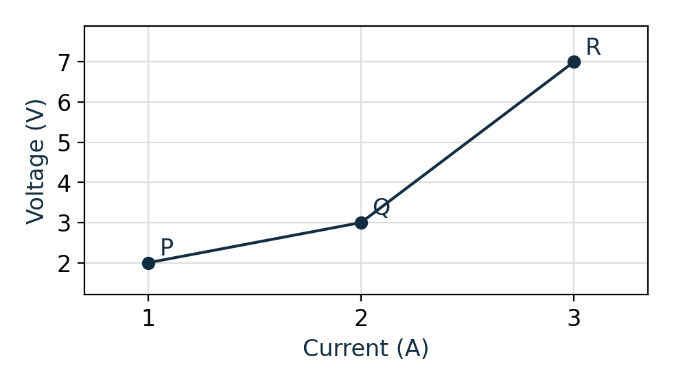
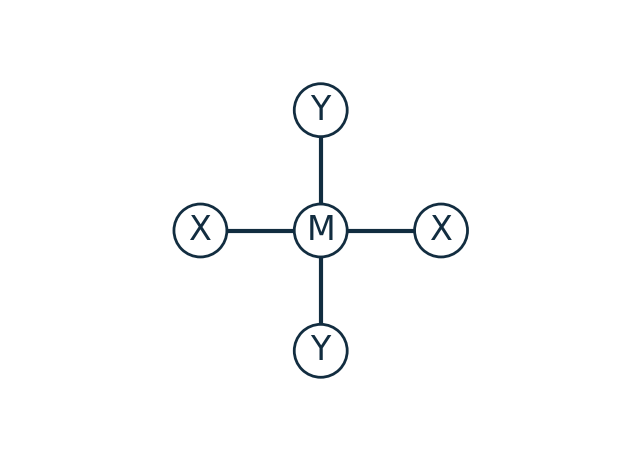
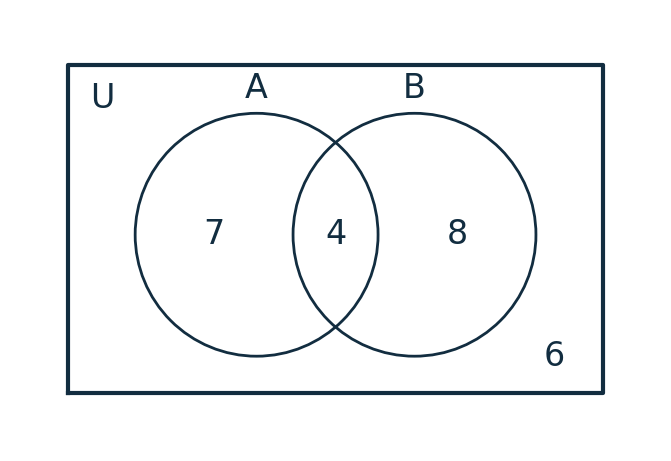
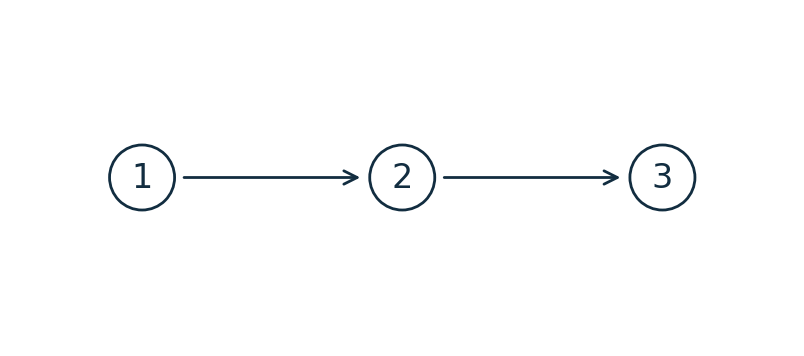

COMEDK UGET Test 12
180 minutes · 180 questions · +1 per correct answer · No negative marking
Physics
Q001. A charged capacitor stores energy U at potential V. What charge does it hold?
A) U/V
B) UV/2
C) 2U/V
D) 2V/U
Worked solution
Answer: (C) 2U/V
Why and working: Charging from zero gives U=QV/2 because the voltage rises linearly with charge. Solve for Q.
Why not the others: (A) omits the factor one half in stored energy. (B) has the wrong dimensions. (D) inverts both energy and voltage.
Q002. Two spherical moons exert equal gravitational forces on identical test masses. The first test mass is twice as far from its moon’s centre as the second. What is the first moon’s mass relative to the second?
A) Twice
B) Four times
C) Half
D) One quarter
Worked solution
Answer: (B) Four times
Why and working: Use F=GMm/r². With F and m fixed, doubling r requires quadrupling M.
Why not the others: (A) treats gravity as inverse distance. (C) inverts a linear scaling. (D) inverts the square scaling.
Q003. A bridge has 6 Ω and 9 Ω above and below its left junction. Its right junction has 10 Ω above it. What single resistor connected in parallel with the existing 30 Ω below it will bring the bridge to balance?
A) 15 Ω
B) 10 Ω
C) 30 Ω
D) 45 Ω
Worked solution
Answer: (C) 30 Ω
Why and working: Balance requires 6/9=10/R, so R=15 Ω. Then 1/15=1/30+1/X gives X=30 Ω.
Why not the others: (A) gives the effective pair resistance. (B) gives the upper arm value. (D) a 45 Ω shunt leaves 18 Ω.
Q004. A galvanometer of resistance G is converted to a voltmeter by adding 9G in series. Compared with the original galvanometer, how does the full-scale voltage change?
A) It increases tenfold
B) It increases ninefold
C) It falls to one tenth
D) It stays fixed
Worked solution
Answer: (A) It increases tenfold
Why and working: The deflection still requires the same galvanometer current I_g. The terminal drop increases from I_gG to I_g(G+9G).
Why not the others: (B) ignores the coil drop. (C) reverses the change. (D) confuses fixed current with fixed voltage.
Q005. A solid rod can be compressed lengthwise or compressed uniformly on all sides. Which measurements determine Young’s modulus and bulk modulus, respectively?
A) Pressure rise divided by volume loss, and axial force divided by fractional length change
B) Shear stress divided by shear strain, and pressure rise divided by fractional length change
C) Axial stress divided by fractional volume change, and pressure rise divided by fractional length change
D) Axial stress divided by fractional length change, and pressure rise divided by fractional volume decrease
Worked solution
Answer: (D) Axial stress divided by fractional length change, and pressure rise divided by fractional volume decrease
Why and working: Uniaxial Young’s modulus uses longitudinal strain. In hydrostatic compression the bulk modulus uses volume strain and a positive pressure increment.
Why not the others: (A) the raw force and volume change are not the stresses and strains needed. (B) uses the definition of shear modulus first. (C) exchanges the relevant strains.
Q006. A compound microscope produces a final image at infinity. With the same eyepiece, the absolute linear magnification of the objective rises from 15 to 20. To keep overall magnifying power unchanged using a different eyepiece in normal adjustment, by what factor should its focal length change?
A) 3/4
B) 5/3
C) 1
D) 4/3
Worked solution
Answer: (D) 4/3
Why and working: The normal-adjustment power is the objective magnification multiplied by D/f_e. A 20/15 gain at the objective requires the same factor of increase in f_e.
Why not the others: (A) inverts the required focal-length change. (B) uses the magnification increment as a factor. (C) would leave the total magnification higher.
Q007. Two refracting telescopes in normal adjustment each have an objective–eyepiece separation of 90 cm. Telescope X has angular magnification 5 in magnitude and Y has 9. How much shorter is Y’s eyepiece focal length?
A) 6 cm
B) 4 cm
C) 9 cm
D) 15 cm
Worked solution
Answer: (A) 6 cm
Why and working: Here L=f_o+f_e and M=f_o/f_e, so f_e=L/(M+1). The two values are 15 cm and 9 cm. Subtract to obtain 6 cm.
Why not the others: (B) subtracts the magnification ratios. (C) gives Y’s focal length alone. (D) gives X’s focal length alone.
Q008. A hydraulic press has smaller and larger piston areas of 4 cm² and 100 cm². The output piston rises 2 mm against a load of 750 N. For an ideal incompressible fluid, what are the required input force and piston travel?
A) 30 N and 2 mm
B) 750 N and 50 mm
C) 18.75 N and 40 mm
D) 30 N and 50 mm
Worked solution
Answer: (D) 30 N and 50 mm
Why and working: Equal pressure gives F=750×4/100=30 N. Volume conservation gives 4d=100×2, hence d=50 mm.
Why not the others: (A) holds displacement fixed instead of displaced volume. (B) holds force fixed instead of pressure. (C) uses incompatible area ratios.
Q009. An isolated group of objects initially has zero total charge. Friction leaves one object with charge +q. What must hold for the remaining objects together?
A) Every remaining object is negative
B) Their net charge is zero
C) Their net charge is −q
D) Their total charge magnitude on individual objects must be exactly q
Worked solution
Answer: (C) Their net charge is −q
Why and working: Charge transfer preserves the signed total, so the algebraic sum of the remaining charges is −q.
Why not the others: (A) individual signs can differ. (B) would make the total +q. (D) opposite charges can cancel in the sum.
Q010. A positive test charge moves from radius 4r to 2r around a fixed positive source Q. What is V_final−V_initial?
A) −kQ/(4r)
B) 3kQ/(4r)
C) kQ/(4r)
D) kQ/(2r)
Worked solution
Answer: (C) kQ/(4r)
Why and working: Use V=kQ/R, so the difference is kQ(1/(2r)−1/(4r)). It is positive because the final point is closer.
Why not the others: (A) reverses the order of potentials. (B) adds the potentials. (D) uses the final potential alone.
Q011. A brass ring is heated uniformly while a steel sphere at its original temperature is held beside it. The sphere initially just fails to pass. What effect does heating have on the ring’s opening?
A) Its diameter decreases as metal expands inward
B) Only its outside diameter increases
C) Its diameter increases, so passage can become possible
D) Its diameter stays fixed because the centre is empty
Worked solution
Answer: (C) Its diameter increases, so passage can become possible
Why and working: Uniform free expansion scales all linear distances in the ring. The inner boundary scales just like a circle drawn on a full sheet.
Why not the others: (A) free expansion magnifies a hole. (B) both boundaries expand. (D) the boundary is part of the metal.
Q012. A metal wire tapers smoothly along its length with the same carrier density throughout. A steady direct current flows through it. At a narrow section, what happens to the drift speed and the number of carriers crossing a section per second relative to a wider section?
A) Drift speed is larger and number per second is unchanged
B) Both are larger
C) Both are smaller
D) Drift speed is unchanged and number per second is smaller
Worked solution
Answer: (A) Drift speed is larger and number per second is unchanged
Why and working: Steady current fixes the rate of charge crossing every section. Since I=neAv_d, the same carrier flow through a narrower area requires larger drift speed.
Why not the others: (B) would accumulate charge between cross sections. (C) smaller area requires larger drift speed at fixed current. (D) ignores current continuity.
Q013. A compass beside a straight wire deflects with the circuit closed. Reversing the battery reverses the deflection and opening the circuit restores the original direction. Which property of the observation establishes that the effect follows the current?
A) It disappears at zero current and changes sense under current reversal
B) The compass needle has a fixed mass
C) The wire keeps its shape throughout
D) The final original direction shows Earth’s field has reversed twice
Worked solution
Answer: (A) It disappears at zero current and changes sense under current reversal
Why and working: Both switching and reversal vary the current while keeping the wire in place. The field due to the wire responds to those changes.
Why not the others: (B) mass never changes. (C) shape alone cannot explain reversal. (D) opening the circuit removes the wire’s field.
Q014. A gas expands against a constant 60 kPa while absorbing 170 J of heat. Its volume grows by 2.0 L. What happens to internal energy?
A) It rises by 290 J
B) It rises by 50 J
C) It falls by 50 J
D) It rises by 120 J
Worked solution
Answer: (B) It rises by 50 J
Why and working: The gas does 60×2=120 J of work since kPa·L equals J. Thus ΔU=170−120=50 J.
Why not the others: (A) adds work done by the gas. (C) reverses the heat-work balance. (D) gives the work alone.
Q015. Looking directly at end X of a solenoid, the current goes anticlockwise. The current is now reversed while the turns stay fixed. What is X after reversal?
A) A south pole
B) A north pole
C) A point of zero internal field
D) A pole whose sense depends on the number of turns
Worked solution
Answer: (A) A south pole
Why and working: X is initially north by the right-hand grip rule. Reversal makes the current clockwise as seen from X, making it south.
Why not the others: (B) gives the original pole. (C) reversal changes field direction, not its presence. (D) turn count changes field strength.
Q016. During the first stage of a procedure a loop of area A turns from edge-on to face-on in a uniform field B. During the second stage it stays face-on while its area falls to one third. What is the ratio of the magnitude of the second flux change to the magnitude of the first?
A) 1/3
B) 2/3
C) 3
D) 1
Worked solution
Answer: (B) 2/3
Why and working: The flux goes from 0 to BA during the turn, then from BA to BA/3 during the area change. The second change has magnitude 2BA/3, so its ratio to the first is 2/3.
Why not the others: (A) is the final flux fraction rather than the change. (C) inverts a different fraction. (D) the two changes do not have equal magnitudes.
Q017. How does an ideal gas exert pressure on a rigid wall?
A) Molecules permanently adhere to the wall
B) The wall draws molecules into a static layer
C) Only collisions between molecules transfer momentum to the wall
D) Molecules transfer normal momentum in collisions
Worked solution
Answer: (D) Molecules transfer normal momentum in collisions
Why and working: During reflection the normal momentum changes. The force on the wall is the total normal momentum transferred per unit time.
Why not the others: (A) ideal-gas collisions are elastic. (B) pressure persists without a static layer. (C) wall collisions directly exchange momentum.
Q018. A sinusoidal voltage has a peak of 100√2 V. A true rms meter reads what value?
A) 100 V
B) 100√2 V
C) 50 V
D) Zero
Worked solution
Answer: (A) 100 V
Why and working: For a sinusoid V_rms=V_peak/√2 because the cycle average of the squared sine is one half.
Why not the others: (B) gives the peak. (C) would require an extra factor of two. (D) gives the signed mean.
Q019. An ideal capacitor carries conduction current I(t) in its connecting wires. A surface spanning the same Ampèrian contour passes between the plates instead of crossing a wire. What contribution replaces conduction current for this surface?
A) A changing electric flux supplies displacement current equal to I(t)
B) No current term contributes, so the contour must give two different fields
C) An equal flow of free electrons crosses the insulating gap
D) Only the electric flux itself contributes, without regard to how it changes
Worked solution
Answer: (A) A changing electric flux supplies displacement current equal to I(t)
Why and working: Between the plates Q=ε₀Φ_E in the ideal model. Its derivative is ε₀ dΦ_E/dt=dQ/dt=I(t), giving the consistent current contribution.
Why not the others: (B) the Ampère–Maxwell law gives the same circulation for both surfaces. (C) no conducting path crosses the gap. (D) the law uses the time derivative of electric flux.
Q020. An oscillator has x=A cos ωt with time measured from its rightmost point. What is the phase ωt at the first instant when x=−A/2?
A) π/3
B) 4π/3
C) π/2
D) 2π/3
Worked solution
Answer: (D) 2π/3
Why and working: The displacement first decreases from +A. The first positive solution of cos ωt=−1/2 is 2π/3.
Why not the others: (A) gives positive half amplitude. (B) gives a later crossing. (C) gives zero displacement.
Q021. A concave mirror has focal length −18 cm in the Cartesian convention. A real object is at u=−27 cm. What is v?
A) +54 cm
B) −54 cm
C) −10.8 cm
D) −45 cm
Worked solution
Answer: (B) −54 cm
Why and working: Use 1/v=1/f−1/u=−1/18+1/27=−1/54. The negative image distance denotes a real image in front.
Why not the others: (A) sign reversed. (C) adds signed reciprocals with the wrong sign. (D) adds distances rather than applying the reciprocal equation.
Q022. A straight wavefront in a uniform source-free medium advances without curvature. How do the secondary wavelets from different points on the old front produce the new front?
A) A line through their centres at the old positions gives the advanced front
B) Constructive overlap requires larger wavelets at the ends
C) The new front passes through the outermost point of just one wavelet
D) A forward common tangent to equal-radius wavelets is another straight front
Worked solution
Answer: (D) A forward common tangent to equal-radius wavelets is another straight front
Why and working: All points emit waves of radius vt after the same elapsed time. The forward envelope is parallel to the original front.
Why not the others: (A) centres stay on the old front. (B) wave speed is common throughout. (C) an envelope must use neighbouring wavelets too.
Q023. A periodic wave passes two points 0.60 m apart. The nearer point reaches a given crest 0.15 s before the farther point on the crest’s first arrival. What is the wave speed?
A) 0.090 m/s
B) 0.25 m/s
C) 8.0 m/s
D) 4.0 m/s
Worked solution
Answer: (D) 4.0 m/s
Why and working: The crest takes 0.15 s to advance 0.60 m, giving v=0.60/0.15=4.0 m/s.
Why not the others: (A) multiplies length by time. (B) takes the reciprocal. (C) counts twice the stated distance.
Q024. In a photocell, filter X gives stopping voltage 0.7 V. Filter Y gives 1.4 V at a lower saturation current. Assuming one metal, what is certain about Y compared with X?
A) Its frequency and detected emission rate are both higher
B) Its frequency is lower but each emitted electron receives more photons
C) Its frequency is higher and detected emission rate is lower at saturation
D) Its frequency is the same and its stopping voltage rose because the flux fell
Worked solution
Answer: (C) Its frequency is higher and detected emission rate is lower at saturation
Why and working: The stopping voltages give K_max=eV_s, so the change in maximum kinetic energy is 0.7 eV and Y must have higher frequency. Lower saturation current means fewer collected electrons per second.
Why not the others: (A) plateau current is stated lower. (B) the usual effect is single-photon absorption. (D) changing flux alone leaves stopping voltage fixed.
Q025. In a head-on Rutherford event an alpha particle turns back before reaching the nucleus. At the instant of closest approach what has happened to its initial kinetic energy in this electrostatic model?
A) It has become potential energy of gravity
B) It remains entirely kinetic as the speed peaks
C) It has become electric potential energy of the pair
D) It has been spent on permanent nuclear deformation
Worked solution
Answer: (C) It has become electric potential energy of the pair
Why and working: On a head-on path the speed momentarily reaches zero. Repulsive Coulomb work increases the pair’s potential energy by the initial kinetic energy.
Why not the others: (A) gravity is not the repulsion. (B) closest approach is a turning point. (D) deformation is absent in the model.
Q026. A rod’s recorded length is 0.0120 m. After expressing exactly the same observation in millimetres, which notation retains its original precision?
A) 12 mm
B) 12.00 mm
C) 0.0120 mm
D) 12.0 mm
Worked solution
Answer: (D) 12.0 mm
Why and working: Multiplying by the exact conversion factor 1000 changes units without changing the three significant digits. The trailing zero after the decimal matters.
Why not the others: (A) keeps only two significant figures. (B) suggests four significant figures. (C) fails to convert metres to millimetres.
Q027. As nucleon number rises from A to 27A for nuclei with the usual radius law, how do radius and mean nucleon density change?
A) Radius triples and density falls to one third
B) Radius triples and density stays approximately constant
C) Radius increases 27 times and density stays constant
D) Radius is unchanged and density increases 27 times
Worked solution
Answer: (B) Radius triples and density stays approximately constant
Why and working: The nuclear radius follows R∝A^(1/3). Hence its volume rises 27 times, matching the increase in nucleon number.
Why not the others: (A) mass and volume have the same scale factor. (C) uses a linear radius law. (D) ignores the nuclear radius law.
Q028. A pure crystal absorbs photons that can lift electrons from the valence band to the conduction band. Why are there two kinds of mobile carrier afterward?
A) Conduction electrons acquire either sign of electric charge
B) Photons split into literal positive and negative charges
C) Each excited conduction electron leaves a mobile hole in the valence band
D) The stationary ions begin to move as soon as the band gap is exceeded
Worked solution
Answer: (C) Each excited conduction electron leaves a mobile hole in the valence band
Why and working: An electron’s departure leaves an unfilled valence state. Motion of nearby valence electrons can transfer that vacancy, producing the hole contribution.
Why not the others: (A) electrons always carry negative charge. (B) the process rearranges existing electrons. (D) electrical transport here does not require ion motion.
Q029. A cart goes 3 m east at 1 m/s and then 3 m west at 3 m/s. What are its average speed for the whole trip and instantaneous velocity during its return?
A) 1.5 m/s and 3 m/s west
B) 2 m/s and 3 m/s west
C) Zero and 3 m/s west
D) 1.5 m/s and 1 m/s east
Worked solution
Answer: (A) 1.5 m/s and 3 m/s west
Why and working: The two legs take 3 s and 1 s, so average speed is 6/4=1.5 m/s. On the return its velocity points west with magnitude 3 m/s.
Why not the others: (B) averages the speeds with equal time weights. (C) substitutes average velocity for speed. (D) uses the outward velocity.
Q030. Two fixed charges +Q and −Q lie at −a and +a on the x-axis. A small negative charge is placed at the origin. In what direction is its net force?
A) Toward +a
B) Toward −a
C) It cancels to zero
D) Perpendicular to the axis
Worked solution
Answer: (B) Toward −a
Why and working: The negative charge is attracted to +Q on the left and repelled from −Q on the right. Both forces therefore point left.
Why not the others: (A) reverses both force directions. (C) the forces have equal directions. (D) all three charges lie on the same axis.
Q031. A point on a dipole’s perpendicular bisector is brought closer to its midpoint, staying in the bisector plane. With zero potential at infinity, what happens to its potential?
A) It becomes increasingly positive
B) It becomes increasingly negative
C) It remains zero
D) It changes sign at the midpoint
Worked solution
Answer: (C) It remains zero
Why and working: At every point on the perpendicular bisector the distances to equal opposite charges agree. Thus kq/r and −kq/r cancel exactly.
Why not the others: (A) ignores the negative charge. (B) ignores the positive charge. (D) the potential is zero all along the bisector.
Q032. A vector u has components (−2,4). A nonzero vector v has components (6,−12). Which relation is correct?
A) v=−3u
B) v=3u
C) v=−u/3
D) v and u are perpendicular
Worked solution
Answer: (A) v=−3u
Why and working: Each component of v equals the corresponding component of u times −3. Hence the vectors have opposite directions and a magnitude ratio of three.
Why not the others: (B) misses the reversal of direction. (C) inverts the magnitude ratio. (D) a negative scalar multiple is antiparallel.
Q033. For a wire carrying a fixed current, the carrier density is doubled and mobility is reduced to one third by a change in material. The cross section stays fixed. How must the applied electric field change?
A) It becomes six times as large
B) It becomes 1.5 times as large
C) It becomes two thirds as large
D) It stays the same
Worked solution
Answer: (B) It becomes 1.5 times as large
Why and working: Use I=neAμE. The product nμ becomes 2/3 of its original value, so E must increase by 3/2.
Why not the others: (A) combines inverse mobility with direct density scaling. (C) gives the change in nμ. (D) ignores the conductivity change.
Q034. Two coplanar concentric loops of radii R and 3R carry currents I and 2I in opposite senses. What additional current in the larger loop, in the same sense as its existing current, cancels the central field?
A) I
B) 2I
C) 3I
D) I/3
Worked solution
Answer: (A) I
Why and working: Central fields scale as current over radius. The large loop therefore needs a total of 3I to balance the small loop’s I, requiring an extra I.
Why not the others: (B) would bring the total to 4I. (C) states the needed total. (D) confuses field ratio with current addition.
Q035. A bat applies an average 200 N force for 0.015 s. What is the magnitude of the ball’s momentum change?
A) 13,333 kg·m/s
B) 0.075 kg·m/s
C) 3.0 kg·m/s
D) 0.015 kg·m/s
Worked solution
Answer: (C) 3.0 kg·m/s
Why and working: Impulse equals average force times contact duration, so Δp=200×0.015=3.0 kg·m/s.
Why not the others: (A) divides by the contact time. (B) does not use the stated force and time consistently. (D) gives the duration alone.
Q036. A short magnet points north along the positive x-axis. At points in its equatorial plane, what is the direction of its own magnetic field?
A) Along positive x
B) Radially away from its centre in that plane
C) Along negative x
D) Perpendicular to x and to all radial directions
Worked solution
Answer: (C) Along negative x
Why and working: On the perpendicular bisector the transverse contributions cancel. The remaining field is opposite the dipole moment, which points from south to north.
Why not the others: (A) uses the axial direction. (B) transverse components cancel. (D) field aligns with the dipole axis there.
Q037. The same flux change of 0.024 Wb per turn takes 0.12 s in coil X with 10 turns and 0.30 s in coil Y with 50 turns. What is the ratio of induced emf magnitudes Y to X?
A) 2
B) 5
C) 2.5
D) 0.5
Worked solution
Answer: (A) 2
Why and working: The emf magnitude is NΔΦ/Δt. Thus Y/X=(50/10)(0.12/0.30)=2.
Why not the others: (B) uses the turn ratio alone. (C) uses the inverse time comparison alone. (D) inverts the final ratio.
Q038. At one instant a winch pulls a crate with 80 N along its direction of motion while friction of 30 N opposes it. Its speed is 0.60 m/s. What is the net mechanical power delivered to the crate?
A) 30 W
B) 48 W
C) 18 W
D) 66 W
Worked solution
Answer: (A) 30 W
Why and working: Net power is (80−30)×0.60=30 W. Friction contributes negative power.
Why not the others: (B) is winch power alone. (C) is the magnitude of frictional power alone. (D) adds opposing contributions.
Q039. A series LCR circuit has R=12 Ω and equal reactances of 15 Ω at frequency f. At the same f its inductance is increased by 60% with the other elements fixed. What is the new impedance magnitude?
A) 21 Ω
B) 15 Ω
C) 9 Ω
D) 12 Ω
Worked solution
Answer: (B) 15 Ω
Why and working: New X_L=24 Ω, so X_L−X_C=9 Ω. Then Z=√(12²+9²)=15 Ω.
Why not the others: (A) adds perpendicular phasor magnitudes algebraically. (C) gives net reactance alone. (D) keeps the resonant impedance.
Q040. A wave travels along +x and its electric field oscillates along y. Which magnetic-field oscillation is consistent with plane electromagnetic propagation?
A) Along x
B) Along y
C) Along x+y
D) Along z
Worked solution
Answer: (D) Along z
Why and working: In a plane electromagnetic wave both fields are transverse and mutually perpendicular. With propagation along x and electric field along y, the magnetic axis is z.
Why not the others: (A) would be longitudinal. (B) would be parallel to the electric field. (C) has a longitudinal component.
Q041. A disc starts with angular momentum 12 kg·m²/s about its axle. A torque of −3 N·m acts for 2 s and then +2 N·m acts for 4 s. What is its final angular momentum about the same axis?
A) 14 kg·m²/s
B) 26 kg·m²/s
C) 2 kg·m²/s
D) −2 kg·m²/s
Worked solution
Answer: (A) 14 kg·m²/s
Why and working: The integrated torque is −3×2+2×4=2 kg·m²/s. Add this change to the initial 12.
Why not the others: (B) adds the first torque’s magnitude instead of its signed impulse. (C) gives the net change. (D) reverses the net change and omits the original momentum.
Q042. In glass, a ray has incidence angle 45° at a glass–air boundary. Take n_glass=1.50 and n_air=1.00. Replacing air with water of index 4/3 has what effect?
A) Ordinary refraction changes to total internal reflection
B) Total internal reflection occurs in both cases
C) Ordinary refraction occurs in both cases
D) Total internal reflection changes to ordinary refraction
Worked solution
Answer: (D) Total internal reflection changes to ordinary refraction
Why and working: TIR needs sin i>n_out/n_in. Here sin 45°≈0.707 exceeds 2/3 but is below 8/9, so only air produces TIR.
Why not the others: (A) reverses the two thresholds. (B) the ray is below the water threshold. (C) the ray is above the air threshold.
Q043. A plane front reflects from a stationary plane mirror in a uniform medium. Which equality follows from the equal distances covered in equal times by the incident and reflected disturbances?
A) Angle of reflection is twice incidence
B) Incident and reflected rays are always perpendicular
C) Angle of reflection equals angle of incidence
D) Reflection changes the wave’s frequency
Worked solution
Answer: (C) Angle of reflection equals angle of incidence
Why and working: The wavelet radius and the equal-time incident advance are equal. The front construction therefore gives equal angles with the normal.
Why not the others: (A) doubling applies to a different angular separation. (B) perpendicularity requires a particular angle. (D) the stationary mirror leaves frequency unchanged.
Q044. At what altitude above a spherical planet is gravitational acceleration g/9, where g is the surface value and R the planet radius?
A) 3R
B) R/3
C) 8R
D) 2R
Worked solution
Answer: (D) 2R
Why and working: The ratio is R²/(R+h)²=1/9. Thus R+h=3R and h=2R.
Why not the others: (A) uses the distance from the centre. (B) inverts the square-root factor. (C) uses an incorrect linear radius scale.
Q045. Two different metal plates have work functions 2.0 eV and 2.7 eV. Both are illuminated with 3.4 eV photons. What is the difference between their stopping-potential magnitudes?
A) 0.7 V, with the higher-work-function plate having the larger value
B) 0.7 V, with the lower-work-function plate having the larger value
C) 1.4 V, with the plates tied
D) 2.7 V, with the higher-work-function plate having the larger value
Worked solution
Answer: (B) 0.7 V, with the lower-work-function plate having the larger value
Why and working: The maximum kinetic energies are 1.4 eV and 0.7 eV by Einstein’s equation. The stopping potentials in volts are numerically those energies in eV, and differ by 0.7 V.
Why not the others: (A) reverses the ordering of the kinetic energies. (C) uses one energy and overlooks the other. (D) uses a work function directly as a stopping potential.
Q046. The Bohr orbit of radius 16a₀, where a₀ is the ground-state radius, is replaced by the next larger allowed orbit. By how much does the radius increase?
A) 9a₀
B) a₀
C) 4a₀
D) 16a₀
Worked solution
Answer: (A) 9a₀
Why and working: The allowed radii are n²a₀. A radius of 16a₀ corresponds to n=4, followed by 25a₀ at n=5. The difference is 9a₀.
Why not the others: (B) confuses difference in n with difference in radius. (C) uses n itself instead of the change in n squared. (D) gives the original radius.
Q047. Two samples with different shear moduli have equal face areas. Their tangential forces F and 2F produce the same shear strain. What is the second modulus relative to the first?
A) Equal
B) Twice as large
C) One half as large
D) Four times as large
Worked solution
Answer: (B) Twice as large
Why and working: Since shear modulus is shear stress divided by shear strain, equal strain and area make it proportional to tangential force.
Why not the others: (A) ignores the doubled stress. (C) reverses the stress ratio. (D) unnecessarily squares the ratio.
Q048. A nucleus of A=6 has binding energy 30 MeV. If 1 u corresponds to 931 MeV/c², which expression gives its mass defect in u?
A) 5/931
B) 931/30
C) 30×931
D) 30/931
Worked solution
Answer: (D) 30/931
Why and working: The whole nucleus has Δmc²=30 MeV. Converting energy to the equivalent mass in u requires dividing by 931 MeV/u.
Why not the others: (A) uses the binding energy per nucleon. (B) inverts the conversion. (C) multiplies by the conversion factor.
Q049. Silicon receives a dilute trivalent dopant. Which statement describes the equilibrium majority carriers and the net bulk charge?
A) Electrons are majority carriers and the bulk is neutral
B) Holes are majority carriers and the bulk is electrically neutral
C) Holes are majority carriers and the bulk has net positive charge
D) There are no thermally generated minority carriers
Worked solution
Answer: (B) Holes are majority carriers and the bulk is electrically neutral
Why and working: A trivalent acceptor can capture a valence electron, leaving a mobile hole and a negatively charged acceptor ion. Their charges balance in the bulk.
Why not the others: (A) describes donor doping. (C) ignores the acceptor ions. (D) thermal generation still occurs.
Q050. At low Reynolds number, a sphere of radius r falls at terminal speed v. A geometrically similar sphere of radius 2r of the same material falls in a liquid with the same density but four times the viscosity. What is its terminal speed?
A) v
B) 2v
C) 4v
D) v/4
Worked solution
Answer: (A) v
Why and working: Balancing Stokes drag and buoyancy-corrected weight gives v_t∝r²(ρ_s−ρ_f)/η. Radius squared and viscosity both rise fourfold.
Why not the others: (B) uses a linear radius factor or ignores viscosity scaling. (C) considers geometry alone. (D) considers viscosity alone.
Q051. A thin rod carries total charge Q. Its left half has uniform linear density λ and its right half has uniform density 3λ. The halves are equal in length. What is the charge on the central half of the rod?
A) Q/4
B) Q/2
C) 3Q/4
D) 2Q/3
Worked solution
Answer: (B) Q/2
Why and working: The central segment includes half of each uniformly charged half. It contains half the charge from each side and thus half the total.
Why not the others: (A) counts a length fraction without summing the two portions. (C) gives the charge of the entire dense half. (D) does not capture equal fractions of the two halves.
Q052. The neighbourhood of a point contains parallel planar equipotentials with equal potential increments between adjacent planes and equal plane spacings. The labelled potentials increase toward +x. What can be said about the field there?
A) It is approximately uniform and points toward +x
B) It is approximately uniform and points toward −x
C) It lies in the equipotential planes
D) It vanishes because all the planes are parallel
Worked solution
Answer: (B) It is approximately uniform and points toward −x
Why and working: Field is perpendicular to equipotentials and directed down the potential gradient. Equal potential increments over equal distances give an approximately constant magnitude.
Why not the others: (A) points uphill in potential. (C) tangential displacement gives no potential change. (D) a nonzero spatial gradient gives a nonzero field.
Q053. A pond cools from its surface late in autumn. Why does water near 4°C tend to settle beneath water cooled further toward 0°C?
A) Water density increases continuously as it approaches freezing
B) Water has its greatest density near 4°C
C) Ice has higher density than water at 4°C
D) Water below 4°C has no buoyancy
Worked solution
Answer: (B) Water has its greatest density near 4°C
Why and working: Cooling below 4°C makes liquid water expand, lowering its density. Denser liquid tends to remain beneath less dense liquid.
Why not the others: (A) reverses the density trend below 4°C. (C) floating ice is less dense. (D) normal buoyancy still applies.
Q054. A resistor’s measured voltage and current are shown in the graph. Which interval has the greater incremental resistance?

A) From P to Q
B) Both increments are equal
C) The resistance is zero on both intervals
D) From Q to R
Worked solution
Answer: (D) From Q to R
Why and working: Read P=(1 A,2 V), Q=(2 A,3 V), R=(3 A,7 V). The corresponding ΔV/ΔI values are 1 Ω and 4 Ω.
Why not the others: (A) uses the shallower interval. (B) the voltage rises differ across equal current increments. (C) neither interval is horizontal.
Q055. A very long wire pierces an Amperian loop twice in a hypothetical return path: one straight segment passes out of the loop’s plane carrying 3 A and the return segment passes into it carrying the same current. Each segment is locally long compared with the loop. What is the circulation of the total magnetic field around the loop?
A) 3μ₀ A
B) 6μ₀ A
C) Zero
D) It depends on the two penetration points
Worked solution
Answer: (C) Zero
Why and working: Ampère’s law uses the signed sum of threaded currents. Here +3 A and −3 A cancel, even though the field need not be zero everywhere on the contour.
Why not the others: (A) counts one passage only. (B) adds magnitudes instead of signed currents. (D) moving the penetrations within the contour does not change its net current.
Q056. A fluid completes a closed cycle, absorbing 500 J on one leg and losing 350 J on another. These are all its heat transfers. What is the net work done by the fluid?
A) 850 J
B) −150 J
C) 150 J
D) Zero
Worked solution
Answer: (C) 150 J
Why and working: Since the final state equals the initial state, ΔU_cycle=0. Net heat is 500−350=150 J and equals net work by the fluid.
Why not the others: (A) adds incoming and outgoing heat magnitudes. (B) gives work on the fluid. (D) zero internal-energy change does not imply zero work.
Q057. A freely pivoted bar magnet is held just off the direction opposite a uniform field and released. What does the initial torque tend to do?
A) Move its centre along the field with its direction fixed
B) Restore exact antiparallel alignment
C) Increase its alignment with the field
D) Rotate it so its moment stops at right angles to the field
Worked solution
Answer: (C) Increase its alignment with the field
Why and working: The dipole energy −mB cos θ is maximal at θ=180°. A small displacement produces torque toward smaller θ and lower energy.
Why not the others: (A) a uniform field provides no net translation force here. (B) the antiparallel equilibrium is unstable. (D) 90 degrees is not a zero-torque angle.
Q058. Viewed from above, a uniform magnetic field points away from the viewer through a wire ring. The field is weakening. Which induced current is seen?
A) Anticlockwise
B) Zero because field direction is unchanged
C) Alternating between the two senses
D) Clockwise
Worked solution
Answer: (D) Clockwise
Why and working: The induced field must oppose the decrease, hence it points away from the viewer too. The right-hand rule gives clockwise current.
Why not the others: (A) would reinforce the decrease. (B) the magnitude change induces emf. (C) the flux changes monotonically.
Q059. The rms speed in an ideal gas at temperature T is doubled by heating the sample. A second sample of molecules with twice the molecular mass starts at the same T. At what temperature will the second sample match the first sample’s new rms speed?
A) 4T
B) 2T
C) 16T
D) 8T
Worked solution
Answer: (D) 8T
Why and working: Since v_rms²∝T/m, doubling the first speed requires 4T. Doubling molecular mass requires another temperature factor of two for the same speed, giving 8T.
Why not the others: (A) ignores the mass change. (B) accounts for mass only. (C) squares the mass factor too.
Q060. In a series AC circuit the net voltage phasor leads the current. Which reactance exceeds the other?
A) Capacitive reactance exceeds inductive reactance
B) Inductive reactance exceeds capacitive reactance
C) The reactances are equal
D) Both reactances must vanish separately
Worked solution
Answer: (B) Inductive reactance exceeds capacitive reactance
Why and working: Voltage leads current when the net reactance X_L−X_C is positive.
Why not the others: (A) would make voltage lag. (C) would put voltage in phase. (D) a lead implies nonzero net reactance.
Chemistry
Q061. An ideal binary solution has a relative vapour-pressure lowering of 0.08. The solvent has 46 mol and the other component is nonvolatile. How many moles of solute are present?
A) 3.68 mol
B) 5 mol
C) 42.32 mol
D) 4 mol
Worked solution
Answer: (D) 4 mol
Why and working: The relative lowering is x_solute=n/(46+n)=0.08. Therefore 0.92n=3.68 and n=4 mol.
Why not the others: (A) uses solvent moles as total moles. (B) would make the fraction 5/51. (C) computes a solvent-related quantity instead of n.
Q062. Which change is represented by another resonance contributor of the acetate ion?
A) Move one hydrogen from carbon to oxygen
B) Move the C=O π bond to the other oxygen and move the negative charge to the formerly double-bonded oxygen
C) Move the carbon nucleus between the two oxygen nuclei
D) Remove an electron to make a neutral radical
Worked solution
Answer: (B) Move the C=O π bond to the other oxygen and move the negative charge to the formerly double-bonded oxygen
Why and working: Both contributors have the same atom connectivity and total charge. Redistribution of a lone pair and a π pair exchanges the charge and bond locations.
Why not the others: (A) moves nuclei and changes connectivity. (C) resonance does not move nuclei. (D) changes the electron count and charge.
Q063. At infinite dilution λ°(Mg²⁺)=106 and λ°(Cl⁻)=76 in S·cm²/mol. What is Λ° for MgCl₂?
A) 182 S·cm²/mol
B) 288 S·cm²/mol
C) 91 S·cm²/mol
D) 258 S·cm²/mol
Worked solution
Answer: (D) 258 S·cm²/mol
Why and working: Kohlrausch’s sum counts one Mg²⁺ and two Cl⁻ per formula unit. The result is 106+2×76=258.
Why not the others: (A) counts one chloride. (B) doubles the cation contribution instead of the anion. (C) averages two values.
Q064. Two first-order decays have rate constants k and 2k. At time t, the slower reaction has one half of its starting amount left. What fraction remains in the faster reaction?
A) 1/2
B) 1/8
C) 1/√2
D) 1/4
Worked solution
Answer: (D) 1/4
Why and working: At equal time the fractions are exp(−kt) and exp(−2kt). The faster fraction is the square of one half.
Why not the others: (A) assumes equal half-lives. (B) uses an exponent of three. (C) would be the result for half the rate constant.
Q065. Which alkene has E/Z stereoisomers?
A) Pent-2-ene
B) Pent-1-ene
C) 2-Methylbut-2-ene
D) 2,3-Dimethylbut-2-ene
Worked solution
Answer: (A) Pent-2-ene
Why and working: Each double-bond carbon in pent-2-ene has two distinct groups. This makes two configurations possible without rotating the π bond.
Why not the others: (B) its terminal carbon has two H atoms. (C) one alkene carbon has two methyl groups. (D) both alkene carbons have identical pairs of methyl groups.
Q066. A metal lattice admits small carbon atoms into its gaps without replacing the metal framework. Which classification follows from that structural observation?
A) Substitutional alloy structure
B) Molecular solid of isolated carbon molecules
C) Interstitial compound or alloy structure
D) Mixture of two metal lattices
Worked solution
Answer: (C) Interstitial compound or alloy structure
Why and working: The added atoms occupy voids among the host atoms. That is interstitial occupancy, as in carbon present between iron atoms.
Why not the others: (A) replacement of host atoms is explicitly excluded. (B) the described guest is an individual small atom. (D) one lattice remains the host.
Q067. An octahedral d⁶ ion pairs all six electrons in the lower t₂g set. If the same ion instead has a weak-field octahedral arrangement, by how many does its number of unpaired electrons increase?
A) Four
B) Two
C) Six
D) Zero
Worked solution
Answer: (A) Four
Why and working: In the paired case t₂g⁶ has no unpaired electrons. Weak field fills all five d orbitals singly before pairing the sixth in t₂g, leaving four singles.
Why not the others: (B) counts only the two e_g singles. (C) six electrons in five d orbitals must include a pair. (D) the weak-field occupancy differs.
Q068. A molecular sample has formula C₄H₈O₂. Which expression gives the number of moles of empirical-formula units represented by 0.40 mol of these molecules?
A) 0.20 mol
B) 0.40 mol
C) 1.60 mol
D) 0.80 mol
Worked solution
Answer: (D) 0.80 mol
Why and working: Divide every molecular subscript by their greatest common divisor, 2, to obtain C₂H₄O. Each molecule contains two empirical units, giving 0.80 mol of units.
Why not the others: (A) inverts the subscript ratio. (B) treats the molecular and empirical formulas as equal. (C) uses a factor of four rather than two.
Q069. What major positions are favoured in electrophilic substitution of bromobenzene?
A) Ortho and para
B) Meta only
C) Ortho and meta
D) Para and meta but never ortho
Worked solution
Answer: (A) Ortho and para
Why and working: The halogen can donate a lone pair to stabilise the ortho and para σ complexes. Its inductive withdrawal lowers reactivity overall.
Why not the others: (B) confuses deactivation with meta direction. (C) omits resonance stabilisation of para attack. (D) ortho attack has the same resonance rationale.
Q070. Which alcohol is conventionally added to industrial ethanol in some denatured formulations specifically to make it unsuitable for drinking?
A) Propane
B) Methanol
C) Ethanal
D) Ethanoic acid
Worked solution
Answer: (B) Methanol
Why and working: Methanol is the lower one-carbon alcohol and is toxic when ingested. Deliberately making industrial ethanol unfit for consumption is denaturation.
Why not the others: (A) propane is not an alcohol. (C) ethanal is an aldehyde. (D) ethanoic acid is a carboxylic acid.
Q071. An electron is described by a state with a narrower spread of position than before. What must happen to the lower bound on its momentum uncertainty?
A) It increases
B) It decreases
C) It stays fixed
D) It becomes zero for any state
Worked solution
Answer: (A) It increases
Why and working: The inequality ΔxΔp≥ℏ/2 gives Δp≥ℏ/(2Δx). Reducing Δx raises this bound even if the actual product exceeds the minimum.
Why not the others: (B) reverses the reciprocal dependence. (C) a fixed ℏ does not fix the ratio. (D) a finite Δx gives a positive bound.
Q072. Which aldehyde can act as the enolate donor in its own ordinary aldol reaction?
A) Methanal
B) Benzaldehyde
C) 2,2-Dimethylpropanal
D) Propanal
Worked solution
Answer: (D) Propanal
Why and working: Propanal’s carbon adjacent to CHO is CH₂. Removing an α hydrogen forms a resonance-stabilised enolate that can attack another carbonyl group.
Why not the others: (A) there is no adjacent carbon. (B) the adjacent aromatic ipso carbon lacks hydrogen. (C) the adjacent quaternary carbon lacks hydrogen.
Q073. Aniline is diazotised, and the cold aqueous product is then warmed with water. Which group replaces the diazonium group?
A) NH₂
B) OH
C) CN
D) Cl
Worked solution
Answer: (B) OH
Why and working: Warming the aryl diazonium ion in water hydrolyses the group to phenol with N₂ loss. No other substitution reagent is stated.
Why not the others: (A) would require a route back to the amine. (C) requires cyanide substitution conditions. (D) requires chloride substitution conditions such as CuCl.
Q074. PF₃ and BF₃ both have three fluorine atoms bonded to the central atom. Why are their shapes different?
A) P has no central lone pairs and B has one
B) P has one central lone pair and B has none
C) Both have one central lone pair, but PF₃ is planar
D) Both have no lone pair, but PF₃ is pyramidal
Worked solution
Answer: (B) P has one central lone pair and B has none
Why and working: P has five valence electrons and uses three for the bonds, leaving one pair. B uses its three valence electrons in the three bonds, so only BF₃ is trigonal planar.
Why not the others: (A) swaps the central electron counts. (C) a lone pair would change BF₃’s domain count. (D) PF₃ does have a central lone pair.
Q075. A plant needs both a carbohydrate reserve and a rigid carbohydrate framework. What bond organisation explains why two glucose polymers suit these different roles?
A) Both polymers consist only of β linkages, but starch stores metal ions
B) Starch uses β linkages and cellulose uses α linkages
C) Starch has α linkages that suit storage, whereas cellulose has β linkages that allow extended hydrogen-bonded fibres
D) Both have identical linkage geometry and differ only in whether glucose is present
Worked solution
Answer: (C) Starch has α linkages that suit storage, whereas cellulose has β linkages that allow extended hydrogen-bonded fibres
Why and working: α-linked starch can be stored and mobilised. β(1→4)-linked cellulose forms extended chains that pack into strong fibres.
Why not the others: (A) starch uses α linkages. (B) reverses the linkage types. (D) both polymers contain glucose and their linkages differ.
Q076. A dilute 0.20 molal solution of ideal fully dissociated CaCl₂ and a dilute nonelectrolyte solution have the same freezing point in the same solvent. What is the nonelectrolyte’s molality?
A) 0.20 m
B) 0.40 m
C) 0.60 m
D) 0.0667 m
Worked solution
Answer: (C) 0.60 m
Why and working: Equality of ΔT_f=K_fim means equal particle molality. CaCl₂ supplies one Ca²⁺ and two Cl⁻ per unit, so the particle molality is 3×0.20=0.60 m.
Why not the others: (A) ignores ion formation. (B) counts only two particles. (D) divides instead of multiplying.
Q077. Which process defines the standard enthalpy of formation of one mole of liquid water?
A) 2H₂(g)+O₂(g)→2H₂O(l)
B) H₂(g)+½O₂(g)→H₂O(l)
C) H₂O(l)→H₂O(g)
D) 2H(g)+O(g)→H₂O(l)
Worked solution
Answer: (B) H₂(g)+½O₂(g)→H₂O(l)
Why and working: Formation requires one mole of product from its elements in their standard states. Hydrogen and oxygen are diatomic gases in those states.
Why not the others: (A) the reaction as written forms two moles. (C) this is vaporisation. (D) isolated atoms are not the standard elemental states.
Q078. An electrolysis experiment passes 0.10 F through each of two series cells containing Ag⁺ and Cu²⁺. What is the ratio of deposited moles Ag to Cu if both current efficiencies are 100%?
A) 1:1
B) 2:1
C) 1:2
D) 4:1
Worked solution
Answer: (B) 2:1
Why and working: Equal charge gives equal moles of transferred electrons. Ag⁺ requires one electron per atom, while Cu²⁺ requires two, so deposited amounts are 0.10 and 0.05 mol.
Why not the others: (A) equal charge does not mean equal metal amount. (C) inverts the electron-count relation. (D) squares the valence ratio.
Q079. Two gas species collide frequently at fixed temperature, but only a small fraction of collisions produce reaction. Which extra requirements account for the difference?
A) A sufficiently energetic collision and a suitable relative orientation
B) Only a small molecular mass and low speed
C) Equal molecular momenta regardless of energy
D) A collision at any orientation if the particles carry no net charge
Worked solution
Answer: (A) A sufficiently energetic collision and a suitable relative orientation
Why and working: Effective collisions have enough energy to overcome the barrier and an arrangement that permits bond changes. Many collisions fail one or both conditions.
Why not the others: (B) mass and low speed do not replace an activation threshold. (C) equal momenta do not guarantee an effective collision. (D) neutral molecules still need suitable geometry and energy.
Q080. A buffer has equal moles of weak acid HA and its conjugate base. A small addition of strong base converts one third of the initial HA into A⁻ with no loss of buffer species. How does pH change?
A) It rises by log₁₀2
B) It falls by log₁₀2
C) It rises by log₁₀(4/3)
D) It stays fixed
Worked solution
Answer: (A) It rises by log₁₀2
Why and working: The starting ratio is 1. It becomes (1+1/3)/(1−1/3)=2, so Henderson’s equation gives an increase of log₁₀2.
Why not the others: (B) strong base increases the ratio. (C) ignores the simultaneous acid loss. (D) buffers limit changes without eliminating them.
Q081. In acidic solution one dichromate ion is reduced to two Cr³⁺ ions. How many electrons are accepted in the balanced half-reaction?
A) Three
B) Two
C) Six
D) Twelve
Worked solution
Answer: (C) Six
Why and working: Each Cr is initially +6 and ends at +3, gaining three electrons. Two chromium atoms therefore accept six electrons in total.
Why not the others: (A) counts only one chromium atom. (B) counts the chromium atoms rather than the electron transfer. (D) confuses starting oxidation numbers with their changes.
Q082. The drawing shows a square-planar complex with two X ligands and two Y ligands. Which statement describes the arrangement shown?

A) Each X is cis to the other X
B) Each X is trans to both Y ligands
C) The four positions are tetrahedral rather than square planar
D) Each X is trans to the other X
Worked solution
Answer: (D) Each X is trans to the other X
Why and working: The line joining the two X positions passes through the metal, giving an X–M–X angle of 180°. Each X is at 90° to either Y.
Why not the others: (A) cis would mean a 90-degree angle between the X ligands. (B) each X is adjacent to both Y sites. (C) all sites are drawn in one plane with right angles.
Q083. A neutral molecule R–Br breaks with both bonding electrons going to bromine. Which fragments form?
A) R· and Br·
B) R⁻ and Br⁺
C) R⁺ and Br⁻
D) R⁺ and neutral Br·
Worked solution
Answer: (C) R⁺ and Br⁻
Why and working: Both electrons go to one side in heterolysis. Bromine receives the pair to become Br⁻ while the carbon fragment becomes a cation.
Why not the others: (A) describes homolysis. (B) assigns the pair to carbon. (D) does not conserve total charge.
Q084. Match two historical uses with the corresponding environmental concern. Which statement correctly describes both compounds?
A) CFC refrigerants accumulate only in soil, and DDT is rapidly biodegraded in every setting
B) CFC refrigerants can contribute to stratospheric ozone loss, and DDT can persist and accumulate in food chains
C) CFC refrigerants repair ozone, and DDT has no tendency to persist
D) DDT’s main historic role was refrigerant, and CFCs were mainly crop insecticides
Worked solution
Answer: (B) CFC refrigerants can contribute to stratospheric ozone loss, and DDT can persist and accumulate in food chains
Why and working: CFC-derived radicals can catalyse ozone destruction. DDT is a persistent organochlorine insecticide that can accumulate in organisms and food chains.
Why not the others: (A) misstates both behaviours. (C) reverses ozone impact and dismisses persistence. (D) swaps the main uses.
Q085. How does cumene furnish phenol in the industrial route?
A) Hydrogenation gives cyclohexane, whose cleavage directly yields phenol and acetone
B) Direct hydrolysis of cumene gives phenol and methanol
C) Bromination followed by reduction produces phenol and formaldehyde
D) Air oxidation gives cumene hydroperoxide, whose cleavage yields phenol and acetone
Worked solution
Answer: (D) Air oxidation gives cumene hydroperoxide, whose cleavage yields phenol and acetone
Why and working: The cumene process first installs an O–O group and then acid-catalysed cleavage yields the phenolic product and acetone.
Why not the others: (A) removes aromaticity and lacks the hydroperoxide. (B) cumene has no simple hydrolysable substituent. (C) the described steps do not install the needed oxygen functionality.
Q086. Adding Br₂ to ethene gives which neutral organic product under ordinary addition conditions?
A) Bromoethane
B) 1,1-Dibromoethane
C) Ethane
D) 1,2-Dibromoethane
Worked solution
Answer: (D) 1,2-Dibromoethane
Why and working: The two Br atoms add to the original double-bond carbons, converting the π bond into two C–Br bonds.
Why not the others: (A) adds one bromine as if HBr were used. (B) places both bromines on the same carbon. (C) hydrogenation would be needed.
Q087. Why is acetone useful as the volatile organic component of some cleaning or coating formulations?
A) It can dissolve many organic substances and readily evaporates
B) It is a nonvolatile solid that remains as the protective layer
C) It polymerises instantly with water under ordinary conditions
D) It permanently raises the boiling point of the surface itself
Worked solution
Answer: (A) It can dissolve many organic substances and readily evaporates
Why and working: Acetone is a solvent with relatively low boiling point, so it can carry dissolved substances and then leave by evaporation.
Why not the others: (B) acetone is a volatile liquid. (C) ordinary mixing with water does not cause that reaction. (D) a surface does not acquire a permanent solvent-imposed boiling point.
Q088. A linear tripeptide has amino-acid sequence Gly–Ala–Val. At the bond joining Ala to Val, which group provided the carbonyl carbon and which provided the nitrogen?
A) The Val carboxyl group and the Ala amino group
B) The Ala methyl side chain and the Val carboxyl group
C) The Gly carboxyl group and the Val amino group
D) The Ala carboxyl group and the Val amino group
Worked solution
Answer: (D) The Ala carboxyl group and the Val amino group
Why and working: Sequence convention runs from the N terminus to the C terminus. The peptide linkage at each junction joins the preceding residue’s carboxyl carbon to the following residue’s amino nitrogen.
Why not the others: (A) reverses the polarity of the sequence. (B) the Ala side chain does not form the amide carbonyl. (C) Gly is separated from Val by Ala.
Q089. An excess of O₂ reacts with 0.40 mol Al to form Al₂O₃. How many moles of O₂ are consumed?
A) 0.30 mol
B) 0.20 mol
C) 0.60 mol
D) 0.40 mol
Worked solution
Answer: (A) 0.30 mol
Why and working: Balance 4Al+3O₂→2Al₂O₃. Oxygen consumption is 0.40×3/4=0.30 mol.
Why not the others: (B) uses the amount of oxide formed. (C) uses a wrong coefficient ratio. (D) assumes a one-to-one reactant ratio.
Q090. A semipermeable membrane separates dilute glucose solutions of the same temperature, at concentrations c and 2c. What external pressure difference, applied on the concentrated side, just prevents net solvent osmosis?
A) 2cRT
B) 3cRT
C) Zero
D) cRT
Worked solution
Answer: (D) cRT
Why and working: The ideal osmotic pressures relative to pure solvent are cRT and 2cRT. The needed pressure difference is the difference between them.
Why not the others: (A) uses the concentrated solution against pure solvent. (B) adds the two osmotic pressures. (C) unequal concentrations have different solvent chemical potentials.
Q091. During discharge of a zinc–carbon dry cell, which role does the zinc container serve?
A) Cathode, where zinc ions are plated as metal
B) Anode, where zinc is consumed by oxidation
C) An inert barrier with no role in the redox balance
D) Salt bridge that transports electrons through the paste
Worked solution
Answer: (B) Anode, where zinc is consumed by oxidation
Why and working: The zinc casing supplies electrons to the external circuit through oxidation. It therefore functions as the galvanic anode and is consumed during discharge.
Why not the others: (A) would describe zinc reduction. (C) zinc participates in the cell reaction. (D) ionic paths carry ions, not external-circuit electrons.
Q092. How many spatial orbitals can satisfy n=4 and m_l=+1?
A) Four
B) Three
C) One
D) Six
Worked solution
Answer: (B) Three
Why and working: For n=4, allowed l values are 0, 1, 2, 3. To include m_l=+1, l must be 1, 2 or 3, giving one orbital for each.
Why not the others: (A) includes the 4s orbital with m_l=0. (C) counts only one l value. (D) counts two spin states for each orbital.
Q093. Two Arrhenius plots of ln k versus 1/T have slopes −5000 K and −8000 K. Which reaction has the greater activation energy and by how much?
A) The second, by 3000R
B) The first, by 3000R
C) The second, by 13000R
D) Both energies are equal
Worked solution
Answer: (A) The second, by 3000R
Why and working: Slope equals −E_a/R. Thus the second barrier exceeds the first by (8000−5000)R.
Why not the others: (B) uses signed slope directly as energy. (C) adds magnitudes instead of subtracting. (D) different slopes imply different energies.
Q094. When acidified permanganate acts completely as an oxidant, which manganese species is its usual reduced product?
A) Mn²⁺
B) MnO₂(s)
C) MnO₄²⁻
D) Mn metal
Worked solution
Answer: (A) Mn²⁺
Why and working: In acidic solution MnO₄⁻ undergoes a five-electron reduction to aqueous Mn²⁺ and forms water.
Why not the others: (B) often forms under neutral or mildly alkaline conditions. (C) manganate is not the usual acid reduction product. (D) reduction does not proceed to elemental manganese here.
Q095. In ethyne, an sp orbital on each carbon overlaps to form the C–C σ bond. How many unhybridised p orbitals on each carbon are left to build the C–C π bonds?
A) One
B) Three
C) Two
D) Zero
Worked solution
Answer: (C) Two
Why and working: Only one s and one p orbital are mixed in sp hybridisation. The other two p orbitals are perpendicular and each forms one π bond by side overlap.
Why not the others: (A) confuses sp with sp². (B) one p orbital has already entered hybridisation. (D) two π bonds need two unhybridised p orbitals.
Q096. Why does EDTA consumption in the standard hardness titration measure the total Ca²⁺ and Mg²⁺ amount directly?
A) EDTA binds two metal ions per ligand because both ions are divalent
B) EDTA reduces both ions to their metals
C) Each metal ion forms a 1:1 complex with EDTA
D) The dye indicator quantitatively precipitates all calcium and magnesium
Worked solution
Answer: (C) Each metal ion forms a 1:1 complex with EDTA
Why and working: Each multidentate EDTA ligand binds around one metal centre. Thus the moles of EDTA at the endpoint equal the combined moles of metal ions under the titration conditions.
Why not the others: (A) charge does not determine ligand to metal stoichiometry. (B) complexation is not electron transfer. (D) the indicator signals the endpoint rather than consumes the bulk metal.
Q097. Which para-substituted phenol is expected to be the most acidic?
A) p-Cresol
B) p-Nitrophenol
C) p-Methoxyphenol
D) p-Ethylphenol
Worked solution
Answer: (B) p-Nitrophenol
Why and working: The para nitro group withdraws electron density inductively and by resonance, stabilising the phenoxide ion. The listed alkyl and methoxy groups provide electron donation overall in this comparison.
Why not the others: (A) methyl donation does not stabilise the anion as nitro does. (C) para methoxy donates by resonance. (D) ethyl is electron donating.
Q098. A crystalline substance first melts and then vaporises at the same reference temperature through a suitable reversible path. How does the enthalpy of sublimation relate to those changes?
A) ΔH_sub=ΔH_vap−ΔH_fus
B) ΔH_sub=ΔH_fus+ΔH_vap
C) ΔH_sub=ΔH_fus−ΔH_vap
D) ΔH_sub=0
Worked solution
Answer: (B) ΔH_sub=ΔH_fus+ΔH_vap
Why and working: For matched temperature and states, Hess’s law adds solid-to-liquid and liquid-to-gas changes to obtain solid-to-gas.
Why not the others: (A) would reverse fusion. (C) would reverse vaporisation. (D) different phases can have different enthalpies.
Q099. Which compound is the strongest acid in water among the choices?
A) Acetic acid
B) Propanoic acid
C) Chloroacetic acid
D) Ethanol
Worked solution
Answer: (C) Chloroacetic acid
Why and working: The electron-withdrawing α chlorine stabilises chloroacetate relative to acetate. Propanoic acid adds an alkyl group and ethanol lacks resonance stabilisation of its conjugate base.
Why not the others: (A) lacks the chlorine induction effect. (B) the ethyl group does not enhance acidity beyond chloroacetate. (D) ethoxide lacks the delocalisation of a carboxylate.
Q100. A protein’s amino acid sequence remains unchanged after heating, but its α helices largely disappear. Which structural level is directly lost in that observation?
A) Primary structure
B) Elemental composition
C) Secondary structure
D) Peptide bond connectivity
Worked solution
Answer: (C) Secondary structure
Why and working: α helices are regular local backbone arrangements stabilised largely by hydrogen bonds and are part of secondary structure.
Why not the others: (A) sequence is retained. (B) unfolding does not change element identities. (D) no cleavage of backbone amides is stipulated.
Q101. At a fixed temperature a saturated CaF₂ solution has [Ca²⁺]=s and [F⁻]=2s. After adding soluble NaF, the new equilibrium free [F⁻] is four times the original value. What is the new free [Ca²⁺] relative to s?
A) s/16
B) s/4
C) 4s
D) 16s
Worked solution
Answer: (A) s/16
Why and working: The equilibrium product is K_sp=[Ca²⁺][F⁻]². Quadrupling the free fluoride increases its squared factor by 16, so the calcium concentration must fall by that factor.
Why not the others: (B) ignores the exponent on fluoride. (C) reverses the common-ion effect. (D) treats the equilibrium product as though concentrations rose together.
Q102. A nonvolatile solute of true molar mass 80 g/mol dissociates as AB→A⁺+B⁻. A colligative experiment interpreted with i=1 gives apparent mass 50 g/mol. What fraction dissociated?
A) 0.375
B) 0.40
C) 1.60
D) 0.60
Worked solution
Answer: (D) 0.60
Why and working: The apparent mass is M_true/i, so i=80/50=1.60. Binary dissociation gives i=1+α, hence α=0.60.
Why not the others: (A) uses the fractional apparent-mass loss. (B) subtracts the correct fraction from one. (C) gives i rather than the degree of dissociation.
Q103. What distinguishes a hydrogen–oxygen fuel cell from a sealed store of reactants during operation?
A) It continues indefinitely after all reactant feeds stop
B) It can keep producing current while fuel and oxidant are fed from outside
C) It consumes oxygen without transferring electrons to a load
D) It is driven only by an imposed external current
Worked solution
Answer: (B) It can keep producing current while fuel and oxidant are fed from outside
Why and working: Reactants are delivered continuously to the electrodes and their redox reaction supplies the external current.
Why not the others: (A) operation needs both reactants. (C) an operating fuel cell sends electrons through the load. (D) describes externally driven electrolysis.
Q104. Which species contains a positively charged carbon with an incomplete octet in its usual Lewis representation?
A) CH₃⁻
B) (CH₃)₃C⁺
C) CH₃·
D) CH₄
Worked solution
Answer: (B) (CH₃)₃C⁺
Why and working: Three C–C bonds give the central cation six valence-shell electrons and positive formal charge.
Why not the others: (A) has a lone pair and negative charge. (C) has an unpaired electron and no formal charge. (D) has four bonds and a complete octet.
Q105. A lanthanoid frequently forms a stable 4f⁷ ion in the +2 state. Which element does this describe?
A) Europium
B) Gadolinium
C) Lanthanum
D) Lutetium
Worked solution
Answer: (A) Europium
Why and working: Eu has a 4f⁷6s² outer configuration. Removing the two 6s electrons gives Eu²⁺ with the half-filled 4f subshell.
Why not the others: (B) its common half-filled ion is Gd³⁺. (C) its trivalent ion has no 4f electrons. (D) its common trivalent ion has full 4f.
Q106. Which characteristic accounts for the historic use of phenol as an antiseptic?
A) It increases the germination rate of bacterial spores
B) It has no interaction with cellular membranes or proteins
C) It is an inert hydrocarbon used solely as a carrier solvent
D) It can denature proteins and disrupt microorganisms
Worked solution
Answer: (D) It can denature proteins and disrupt microorganisms
Why and working: Phenol can disrupt cellular proteins and membranes. This chemical activity underlies its historic antimicrobial use.
Why not the others: (A) would not explain antimicrobial action. (B) it does interact with biological targets. (C) phenol contains an OH group and is chemically active.
Q107. Keeping all other conditions standard, what change occurs when HBr adds to propene in the presence of an organic peroxide instead of without it?
A) The major product changes from 1-bromopropane to 2-bromopropane
B) The products change from bromopropanes to chloropropanes
C) The major product stays 2-bromopropane in both cases
D) The major product changes from 2-bromopropane to 1-bromopropane
Worked solution
Answer: (D) The major product changes from 2-bromopropane to 1-bromopropane
Why and working: Without peroxide the ionic pathway favours the more stable secondary carbocation. Under radical initiation Br adds at the terminal carbon to leave the more stable secondary radical before H transfer.
Why not the others: (A) reverses the product assignment. (B) there is no chlorine reagent. (C) ignores the switch in reaction pathway.
Q108. Which simple transformation converts ethanol to a two-carbon carboxylic acid without increasing the carbon count?
A) Dehydration with acid
B) Reduction with LiAlH₄
C) Oxidation with a suitable excess oxidant
D) Addition of HBr under radical conditions
Worked solution
Answer: (C) Oxidation with a suitable excess oxidant
Why and working: A primary alcohol can oxidise through the aldehyde to ethanoic acid. The change occurs at the original alcohol carbon and retains both carbons.
Why not the others: (A) produces ethene. (B) is a reduction and ethanol is already the alcohol. (D) ethanol has no carbon–carbon double bond for that addition.
Q109. An enzyme briefly loses catalytic activity at extreme pH. Activity returns when the pH is reset and the protein’s original shape is restored. Which inference fits these observations?
A) The primary sequence must have been irreversibly destroyed
B) The enzyme became permanently inactive at the first pH change
C) The final activity proves that pH did not change any enzyme property
D) The disturbance was reversible under the conditions used
Worked solution
Answer: (D) The disturbance was reversible under the conditions used
Why and working: Recovery of shape and function shows the disturbance can be undone. Reversible changes can include side-chain protonation and altered folded interactions.
Why not the others: (A) permanent sequence destruction would prevent recovery here. (B) activity was observed again. (C) temporary loss of activity demonstrates an effect.
Q110. Which real d orbital has four main lobes pointing along the x and y axes, with alternating signs in the xy plane?
A) d(xy)
B) d(xz)
C) The d orbital conventionally written d(x²−y²)
D) d(z²)
Worked solution
Answer: (C) The d orbital conventionally written d(x²−y²)
Why and working: The angular factor x²−y² is positive on the x axis and negative on the y axis. It vanishes on the bisectors, producing lobes along the axes.
Why not the others: (A) its lobes lie between x and y axes. (B) its lobes lie in the xz plane. (D) features axial z lobes and an equatorial belt.
Q111. Why can attaching zinc to steel protect the steel even if the zinc layer is locally scratched?
A) Zinc becomes the cathode and forces iron to oxidise
B) Zinc removes all dissolved oxygen from any body of water
C) Zinc preferentially oxidises and supplies electrons to the steel
D) Scratching guarantees no electrochemical cell can form
Worked solution
Answer: (C) Zinc preferentially oxidises and supplies electrons to the steel
Why and working: Zinc serves as a sacrificial anode. It is more readily oxidised than iron, helping keep exposed iron cathodic.
Why not the others: (A) assigns the electrode roles backwards. (B) complete oxygen removal is not required. (D) electrical contact and moisture can sustain a cell.
Q112. Which pair has especially similar atomic radii because the first lanthanoid row contracts before the heavier member’s period?
A) Na and K
B) C and Si
C) Zr and Hf
D) Be and Ba
Worked solution
Answer: (C) Zr and Hf
Why and working: Poor shielding by 4f electrons increases effective nuclear attraction across the lanthanoids. Thus Hf is smaller than the usual down-group trend would suggest and resembles Zr.
Why not the others: (A) a main-group pair across adjacent periods without lanthanoids between them. (B) does not straddle the lanthanoid filling. (D) large down-group size change is expected.
Q113. O₂ loses an electron from its highest occupied antibonding orbital. What change in bond order results for O₂⁺?
A) It rises from 2 to 2.5
B) It falls from 2 to 1.5
C) It rises from 2 to 3
D) It stays 2
Worked solution
Answer: (A) It rises from 2 to 2.5
Why and working: Bond order equals half the excess of bonding over antibonding electrons. Removing one antibonding electron raises it by one half.
Why not the others: (B) corresponds to losing a bonding electron. (C) would require a change of two electrons. (D) the occupancy difference changes.
Q114. Which reactant pair best suits preparation of methoxyethane by Williamson synthesis under ordinary SN2 conditions?
A) Sodium ethoxide and bromobenzene
B) Sodium methoxide and tert-butyl bromide
C) Sodium methoxide and bromoethane
D) Sodium phenoxide and bromomethane
Worked solution
Answer: (C) Sodium methoxide and bromoethane
Why and working: Methoxide attacks primary bromoethane at its alkyl carbon, giving CH₃OCH₂CH₃. Primary substitution avoids the hindered substrate problem.
Why not the others: (A) aryl bromide does not undergo ordinary SN2. (B) a tertiary halide favours elimination and has the wrong carbon skeleton. (D) this gives anisole.
Q115. Which statement best captures the syllabus distinction between a hormone and an enzyme?
A) Every hormone is an enzyme circulating in the blood
B) A hormone conveys a regulatory signal to responsive cells, while an enzyme catalyses a reaction
C) Every enzyme acts only as a long-range signal
D) A hormone is defined by being a metal ion
Worked solution
Answer: (B) A hormone conveys a regulatory signal to responsive cells, while an enzyme catalyses a reaction
Why and working: Hormones are classified by their signalling and regulatory role. Enzymes are classified by catalytic action.
Why not the others: (A) signalling does not require catalytic activity. (C) enzymes can act locally wherever substrates occur. (D) hormones have several chemical classes.
Q116. Dissolving a salt to concentration c releases 7 kJ per mole of salt. Diluting that solution to a specified lower concentration then absorbs 2 kJ per mole. What is the direct dissolution enthalpy to the lower concentration?
A) −5 kJ/mol
B) −9 kJ/mol
C) +5 kJ/mol
D) +9 kJ/mol
Worked solution
Answer: (A) −5 kJ/mol
Why and working: The net enthalpy is −7+2=−5 kJ/mol by Hess’s law. The two paths have the same final state.
Why not the others: (B) treats the dilution as exothermic. (C) reverses the net sign. (D) adds magnitudes and uses the wrong sign.
Q117. What common explanation makes variable oxidation states more pronounced in early actinoids than in most lanthanoids?
A) The 5f, 6d and 7s energies are relatively close
B) Actinoid f electrons occupy a filled 4f shell in every atom
C) No actinoid loses valence electrons during compound formation
D) Every lanthanoid uses all 4f electrons equally in bonding
Worked solution
Answer: (A) The 5f, 6d and 7s energies are relatively close
Why and working: Similar valence orbital energies in early actinoids allow different numbers of electrons to participate in bonding. Lanthanoids are more consistently trivalent.
Why not the others: (B) 5f filling is relevant for actinoids. (C) oxidation states reflect electron removal or sharing. (D) 4f orbitals are generally less available for bonding.
Q118. Two deficiency observations are night blindness and poor blood clotting. Which pair of fat-soluble vitamins addresses those two functions, respectively?
A) K and A
B) D and E
C) C and K
D) A and K
Worked solution
Answer: (D) A and K
Why and working: Vitamin A derivatives participate in the visual cycle, while vitamin K supports activation of several clotting factors.
Why not the others: (A) swaps the functions. (B) vitamin D is linked to calcium and vitamin E to antioxidant roles. (C) vitamin C is water-soluble and is linked to collagen.
Q119. In carbonyl addition of cyanide to ethanal, which end of CN⁻ forms the new bond and to which atom?
A) The nitrogen end attacks only the methyl carbon
B) The carbon end attacks the carbonyl oxygen
C) The carbon end attacks the carbonyl carbon
D) The oxygen atom attacks the cyanide carbon first
Worked solution
Answer: (C) The carbon end attacks the carbonyl carbon
Why and working: In cyanohydrin formation the cyanide carbon donates a lone pair to the electrophilic C=O carbon. The π electrons shift onto oxygen before protonation.
Why not the others: (A) wrong attacking end and the methyl carbon is not the electrophilic site. (B) oxygen is already the electron-rich end of C=O. (D) the initial step uses cyanide as nucleophile.
Q120. Which pair distinguishes the usual sugars in RNA and DNA, respectively?
A) 2-Deoxyribose and ribose
B) Ribose and 2-deoxyribose
C) Glucose and fructose
D) Ribose and ribose
Worked solution
Answer: (B) Ribose and 2-deoxyribose
Why and working: RNA has a 2′ hydroxyl on its ribose. The corresponding carbon in DNA bears H instead of OH.
Why not the others: (A) reverses the sugars. (C) neither is the standard backbone pentose. (D) misses DNA’s missing 2′ oxygen.
Mathematics
Q121. Two square matrices satisfy AB=0 and an invertible matrix P is available. Which product necessarily vanishes even when BA is unknown?
A) (PB)(AP)
B) (AP)(BP)
C) (PA)(BP)
D) (PA)(PB)
Worked solution
Answer: (C) (PA)(BP)
Why and working: Associativity gives (PA)(BP)=P(AB)P=0. The other products reverse A and B or leave a P between them.
Why not the others: (A) reduces to P(BA)P. (B) introduces a factor P between A and B. (D) also separates A and B with P.
Q122. In the Venn diagram, suppose one member moves from the A-only region to the overlap, with all other memberships unchanged. What will be the new value of n(A)−n(B)?

A) −2
B) −1
C) 0
D) 2
Worked solution
Answer: (A) −2
Why and working: The original difference is 7−8=−1 because the overlap contributes equally to both. The move leaves n(A) fixed while raising n(B) by one.
Why not the others: (B) uses the original difference. (C) incorrectly changes both sizes in opposite or compensating ways. (D) reverses the subtraction.
Q123. A nonsingular matrix A maps u=(1,−2)ᵀ to (3,4)ᵀ and v=(2,1)ᵀ to (1,−1)ᵀ. What is the unique solution of Ax=(5,9)ᵀ?
A) (4,−3)ᵀ
B) (0,−5)ᵀ
C) (5,9)ᵀ
D) (0,5)ᵀ
Worked solution
Answer: (B) (0,−5)ᵀ
Why and working: The right-hand side is 2(3,4)−(1,−1), so A⁻¹ maps it to 2u−v=(0,−5).
Why not the others: (A) corresponds to 2u+v. (C) uses the output as the input. (D) comes from reversing the sign of 2u−v.
Q124. For x>0 let y=x^(1/x). At which x is y′=0?
A) e
B) 1
C) 1/e
D) e²
Worked solution
Answer: (A) e
Why and working: Differentiate ln y=(ln x)/x to get y′/y=(1−ln x)/x². Thus ln x=1 and y>0 imposes no further zeros.
Why not the others: (B) ln 1 is zero, leaving a nonzero numerator. (C) gives ln x=−1. (D) gives ln x=2.
Q125. The arrow diagram represents a relation on {1,2,3}. Which ordered pair is forced if the relation is extended to be transitive?

A) (1,3)
B) (3,1)
C) (2,1)
D) (3,2)
Worked solution
Answer: (A) (1,3)
Why and working: The diagram gives 1→2 and 2→3. Transitivity adds the composed arrow 1→3.
Why not the others: (B) would reverse the composed arrow. (C) reversal requires symmetry, which is not given. (D) is the reverse of an existing arrow.
Q126. For a>0, what is ∫₋ₐ⁰ dx/√(4a²−x²)?
A) −π/6
B) π/6
C) π/3
D) π/2
Worked solution
Answer: (B) π/6
Why and working: The antiderivative is arcsin(x/(2a)). At zero it is 0 and at −a it is −π/6, yielding π/6.
Why not the others: (A) reverses the limits. (C) uses arccos(1/2) instead of arcsin(1/2). (D) treats the lower argument as −1.
Q127. Find the value of y at x=ln 2 if y′+2y=3e⁻ˣ and y(0)=1.
A) 3/2
B) 1/2
C) 1
D) 2
Worked solution
Answer: (C) 1
Why and working: Multiplying by e²ˣ gives (e²ˣy)′=3eˣ. Hence y=3e⁻ˣ+Ce⁻²ˣ, and the initial condition gives C=−2. At x=ln 2, y=3/2−2/4=1.
Why not the others: (A) drops the homogeneous term. (B) mistakes the second term alone for the total. (D) does not satisfy the evaluated expression.
Q128. If sin θ=4/5 and θ lies in quadrant II, what is cos θ?
A) +3/5
B) −4/5
C) −1/5
D) −3/5
Worked solution
Answer: (D) −3/5
Why and working: The identity gives cos² θ=1−16/25=9/25. Cosine is negative in quadrant II.
Why not the others: (A) uses the quadrant-I sign. (B) uses the sine’s magnitude. (C) subtracts sine linearly from one.
Q129. A=(1,0,2) and B=(7,6,−4). From A, a point P lies two thirds of the way toward B. What is P?
A) (3,2,0)
B) (5,4,−2)
C) (4,3,−1)
D) (6,6,−6)
Worked solution
Answer: (B) (5,4,−2)
Why and working: The displacement B−A=(6,6,−6), so add two thirds of it to A. That gives (5,4,−2).
Why not the others: (A) travels one third of the way. (C) gives the midpoint. (D) gives only the full displacement.
Q130. Let A have rows (0,1),(0,0). Which nonzero B gives AB=0 and BA≠0?
A) B with rows (0,0),(1,2)
B) B with rows (0,1),(0,0)
C) B with rows (1,2),(0,0)
D) B with rows (1,0),(1,0)
Worked solution
Answer: (C) B with rows (1,2),(0,0)
Why and working: The top row of AB is the second row of B, so it must be zero. The second column of BA is the first column of B, so that column must be nonzero.
Why not the others: (A) its nonzero second row makes AB nonzero. (B) both products vanish because A²=0. (D) its nonzero second row makes AB nonzero.
Q131. How is the Argand point of z=−2+3i transformed when z is multiplied by −i?
A) It becomes (−3,−2)
B) It becomes (−2,−3)
C) It becomes (3,2)
D) It becomes (2,−3)
Worked solution
Answer: (C) It becomes (3,2)
Why and working: Compute −i(−2+3i)=3+2i. Multiplication by −i is a clockwise quarter turn.
Why not the others: (A) uses an anticlockwise quarter turn. (B) only conjugates the original number. (D) rotates by a half turn.
Q132. A curve is parametrised by x=t³−3t and y=t². At t=0 and at t=2 the curve is regular and dx/dt is nonzero. What are the slopes at these two parameter values, respectively?
A) 0 and 9/4
B) 0 and 4/9
C) −3 and 9
D) 0 and 2/3
Worked solution
Answer: (B) 0 and 4/9
Why and working: The slope is (2t)/(3t²−3). At zero the numerator vanishes and the denominator is −3. At two the ratio is 4/9.
Why not the others: (A) uses the reciprocal at the second point. (C) gives dx/dt rather than dy/dx. (D) uses a denominator of 6 instead of 9 at two.
Q133. A proposed antiderivative of (3x+k)/√(x²−4x+7) is 3√(x²−4x+7)+C for all real x. What value of k makes the proposal correct?
A) −4
B) −6
C) −2
D) 6
Worked solution
Answer: (B) −6
Why and working: The chain rule gives 3(2x−4)/(2√(x²−4x+7)). Its numerator simplifies to 3x−6, so k=−6.
Why not the others: (A) uses the linear coefficient of the radicand unchanged. (C) omits the outer multiplier on x−2. (D) reverses the sign of the shift.
Q134. A seven-person panel elects an unordered committee of five. Which different selection gives a bijective count?
A) Choose five people in order
B) Choose the chair and vice-chair from seven
C) Choose the two people who will be left out
D) Choose three people who will be left out
Worked solution
Answer: (C) Choose the two people who will be left out
Why and working: A five-member subset has exactly one two-person complement, and complementing twice recovers the original committee.
Why not the others: (A) each committee has many distinct orders. (B) the two roles are ordered. (D) excluding three leaves a four-person committee.
Q135. Nonzero vectors a and b have equal length and make an angle of 60°. What is the angle between a and a+b?
A) 60°
B) 90°
C) 120°
D) 30°
Worked solution
Answer: (D) 30°
Why and working: The equal lengths make the parallelogram a rhombus and its diagonal a+b bisects the angle. Equivalently a·(a+b)=3a²/2 in magnitude notation and the cosine is √3/2.
Why not the others: (A) uses the full original angle. (B) applies perpendicularity of opposite diagonals to a side. (C) uses the supplementary original angle.
Q136. For real t, when does the system tx+y=1, x+ty=1 have infinitely many solutions?
A) t=−1 only
B) t=1 only
C) t=±1
D) t=0 only
Worked solution
Answer: (B) t=1 only
Why and working: The determinant t²−1 vanishes at ±1. At 1 the equations coincide. At −1 the left sides are negatives but the right sides are both +1, so there is no solution.
Why not the others: (A) gives inconsistency. (C) singularity alone does not guarantee infinitely many solutions. (D) the matrix is invertible at 0.
Q137. What is the sum of coefficients of (2x−1)⁵?
A) −1
B) 32
C) 1
D) 243
Worked solution
Answer: (C) 1
Why and working: Set x=1, so each power of x contributes its coefficient. The value is (2−1)⁵=1.
Why not the others: (A) is the constant coefficient alone. (B) is the leading coefficient. (D) evaluates as though the minus sign were plus.
Q138. A displacement is x(t)=t⁴−4t³+5t² in metres. What is the signed acceleration at t=1 s?
A) 2 m/s²
B) 12 m/s²
C) −6 m/s²
D) −2 m/s²
Worked solution
Answer: (D) −2 m/s²
Why and working: Velocity is 4t³−12t²+10t. Differentiate to get 12t²−24t+10; at t=1 that is −2.
Why not the others: (A) misses the negative sign. (B) uses only the first second-derivative term. (C) does not include all polynomial terms.
Q139. On x>2 evaluate the antiderivative of x/√(x²−4).
A) 2√(x²−4)+C
B) √(x²−4)+C
C) ln(x+√(x²−4))+C
D) x²/√(x²−4)+C
Worked solution
Answer: (B) √(x²−4)+C
Why and working: Let u=x²−4, so du=2x dx. Integration gives (1/2)·2√u=√u.
Why not the others: (A) loses the substitution factor one half. (C) differentiates to 1/√(x²−4). (D) its product derivative has extra terms.
Q140. In a real geometric progression with positive common ratio, t₂=6 and t₅=48. What is t₄?
A) 24
B) 12
C) 16
D) 36
Worked solution
Answer: (A) 24
Why and working: The quotient t₅/t₂=r³=8 gives r=2. Thus t₄=t₂r²=6×4=24.
Why not the others: (B) is t₃. (C) uses an incorrect initial term. (D) adds terms rather than scaling.
Q141. A sail has adjoining edge vectors (3,0,0) and (0,4,2) measured in metres. What is its area if it is a parallelogram?
A) 3√5 m²
B) 12 m²
C) 14 m²
D) 6√5 m²
Worked solution
Answer: (D) 6√5 m²
Why and working: Their cross product is (0,−6,12), with norm √180=6√5. The norm gives the parallelogram area.
Why not the others: (A) halves the area as for a triangle. (B) drops the component due to the edge’s z entry. (C) adds lengths instead of taking the cross product.
Q142. Let F(x)=∫₁^(x²) (t³+1) dt. What is F′ at x=−1?
A) −4
B) 4
C) 2
D) 0
Worked solution
Answer: (A) −4
Why and working: The fundamental theorem and chain rule give F′(x)=2x((x²)³+1). At −1 the upper-limit derivative is negative and the integrand is 2.
Why not the others: (B) uses the sign at +1. (C) drops the upper-limit derivative. (D) F(−1)=0 does not force F′(−1)=0.
Q143. The line through (1,3) and (5,−1) is shifted upward without rotation until its y-intercept doubles. Where does the new line cross the x-axis?
A) (4,0)
B) (0,8)
C) (8,0)
D) (−8,0)
Worked solution
Answer: (C) (8,0)
Why and working: The slope is −1 and the original intercept is 4, giving y=−x+4. The shifted line is y=−x+8; y=0 at x=8.
Why not the others: (A) is the old x-intercept. (B) is the new y-intercept. (D) reverses the slope sign.
Q144. A continuous f satisfies f(x+2)=f(x) for every real x, and its integral on [0,2] is 3. Its integral on [0,1] is −1. What is its integral on [1,5]?
A) 6
B) 5
C) 7
D) 9
Worked solution
Answer: (A) 6
Why and working: The interval [1,5] consists of two whole periods. In each, the part congruent to [1,2] contributes 3−(−1)=4, and the part congruent to [0,1] contributes −1. The total is 2×3=6.
Why not the others: (B) uses the partial integral once without pairing the periods. (C) subtracts a negative partial integral without cancelling its copy. (D) counts three full periods.
Q145. On {1,2}, a relation contains (1,1),(2,2),(1,2) only. Which test fails?
A) Symmetry
B) Reflexivity
C) Transitivity
D) Being a subset of the Cartesian square
Worked solution
Answer: (A) Symmetry
Why and working: The pair (1,2) lacks its reverse. Both diagonal entries exist, and composing any two existing pairs with matching endpoints yields an existing pair.
Why not the others: (B) both diagonal pairs appear. (C) possible compositions stay within the list. (D) each entry is in the Cartesian square.
Q146. A parabola with horizontal axis has vertex (0,0) and passes through (2,4). Where is its focus?
A) (0,2)
B) (1,0)
C) (−2,0)
D) (2,0)
Worked solution
Answer: (D) (2,0)
Why and working: For y²=4ax use 16=8a to get a=2. Since it opens to the right the focus is (a,0).
Why not the others: (A) puts the focus on the vertical axis. (B) uses half the correct focal distance. (C) puts the focus behind the vertex.
Q147. For −1≤x≤1, what is the range of arccos x−π/2?
A) [−π/2,π/2]
B) [0,π]
C) (−π/2,π/2)
D) [−π,0]
Worked solution
Answer: (A) [−π/2,π/2]
Why and working: The principal arccos range is [0,π] including both endpoints. Subtracting π/2 shifts every output down by that amount.
Why not the others: (B) fails to shift the branch. (C) unnecessarily removes both endpoint values. (D) shifts by π rather than π/2.
Q148. A 2×3 matrix and a 3×2 matrix each contain six entries. Which condition prevents equality even if their entries appear in the same row-wise list?
A) They have different total numbers of entries
B) Their orders are different
C) Both must be zero matrices to be equal
D) All nonsquare matrices are unequal to any matrix
Worked solution
Answer: (B) Their orders are different
Why and working: Equality requires the same row and column counts before entries can be compared position by position.
Why not the others: (A) both have six entries. (C) even their zero versions have different orders. (D) nonsquare matrices of the same order can be equal.
Q149. For which real a is the limit of [exp(ax)−1−2x]/x as x tends to zero equal to 3?
A) 5
B) 3
C) 1
D) −1
Worked solution
Answer: (A) 5
Why and working: The standard exponential limit gives [exp(ax)−1]/x tending to a, including a=0 by direct substitution. Subtracting 2 leaves a−2, which equals 3 only at a=5.
Why not the others: (B) ignores the separate linear term. (C) subtracts 2 from the requested value. (D) does not satisfy the limiting relation.
Q150. Which differential polynomial of y=sin x is identically zero?
A) y‴−y′
B) y‴+y
C) y‴+y′
D) y″−y
Worked solution
Answer: (C) y‴+y′
Why and working: The sequence of derivatives is cos x, −sin x, −cos x. Hence y‴+y′=−cos x+cos x=0.
Why not the others: (A) gives −2cos x. (B) adds sine to negative cosine. (D) gives −2sin x.
Q151. At x=0 let f(x)=x sin(1/x) for x≠0 and f(0)=0. What happens there?
A) f is continuous but not differentiable
B) f is differentiable with derivative zero
C) f has a jump discontinuity
D) f is differentiable with derivative one
Worked solution
Answer: (A) f is continuous but not differentiable
Why and working: The function tends to zero by the bound on sine. The difference quotient at zero equals sin(1/x), which has no limit.
Why not the others: (B) the quotient does not tend to zero. (C) the function tends to its defined value. (D) the quotient oscillates instead of tending to one.
Q152. Data values 1, 3 and 5 have frequencies 1, 2 and 1. Add 7 to every observation. What is the new population variance?
A) 4
B) 2
C) 9
D) √2
Worked solution
Answer: (B) 2
Why and working: The original mean is 3; the weighted sum of squared deviations is 4+0+4=8 over four observations. A common translation leaves every deviation unchanged.
Why not the others: (A) omits dividing by the number of observations correctly. (C) incorrectly adds the common shift to the variance. (D) reports the standard deviation.
Q153. A rectangle has length 3 cm and width 2 cm at an instant when its diagonal grows at √13 cm/s and its length grows at 1 cm/s. How fast is its width growing?
A) 13/2 cm/s
B) 1 cm/s
C) 8 cm/s
D) 5 cm/s
Worked solution
Answer: (D) 5 cm/s
Why and working: From d²=l²+w², differentiate to get d d′=l l′+w w′. At this instant 13=3+2w′, hence w′=5 cm/s.
Why not the others: (A) omits the length contribution. (B) equates the length and width rates without justification. (C) subtracts the wrong term before dividing.
Q154. Which function has derivative 6x−2 everywhere?
A) 6x²−2x+7
B) 3x²−2+7
C) 3x²−2x+7
D) 3x²+2x−7
Worked solution
Answer: (C) 3x²−2x+7
Why and working: Differentiate term by term: 3x² contributes 6x, −2x contributes −2, and the constant contributes zero.
Why not the others: (A) derivative begins with 12x. (B) the constant −2 has zero derivative. (D) the linear term has the opposite sign.
Q155. On a single standard die roll let A mean an odd result and B mean a result no greater than 4. Which statement is correct?
A) They are mutually exclusive and exhaustive
B) They are neither mutually exclusive nor exhaustive
C) They are exhaustive but not mutually exclusive
D) They are mutually exclusive but not exhaustive
Worked solution
Answer: (B) They are neither mutually exclusive nor exhaustive
Why and working: The events intersect in {1,3}. Their union is {1,2,3,4,5}, so 6 is uncovered.
Why not the others: (A) there are shared and uncovered outcomes. (C) the union omits 6. (D) 1 and 3 are in both events.
Q156. The lines y=x and y=4−x bound a triangle with the x-axis. What is its area?
A) 2
B) 4
C) 8
D) 16
Worked solution
Answer: (B) 4
Why and working: The boundary crosses the x-axis at 0 and 4. Solving x=4−x gives the top point (2,2), so area is 4×2/2=4.
Why not the others: (A) uses a base of 2 instead of 4. (C) omits the triangular factor one half. (D) multiplies the intercepts as if both were dimensions.
Q157. What are the order and degree of a differential equation written in polynomial form as (1+y′)⁴=y″(1+(y″)²)?
A) Order 4, degree 1
B) Order 2, degree 1
C) Order 3, degree 2
D) Order 2, degree 3
Worked solution
Answer: (D) Order 2, degree 3
Why and working: The highest derivative is y″, so the order is two. Expanding the right side gives y″+(y″)³, so the degree in the highest derivative is three.
Why not the others: (A) confuses the power of a first derivative with order. (B) misses the cubic term after expansion. (C) interchanges polynomial power and derivative order.
Q158. If A∪B=A and A∩B=B, which statement must hold?
A) B is a subset of A
B) A is a proper subset of B
C) A and B are disjoint
D) A and B have equal cardinality
Worked solution
Answer: (A) B is a subset of A
Why and working: The union adds nothing to A, so every member of B already belongs to A. The intersection condition expresses the same containment.
Why not the others: (B) inverts the containment. (C) the intersection is B and B can be nonempty. (D) B may be a proper subset with smaller cardinality.
Q159. A vector has length 10 and unit direction (3/5,0,−4/5). What is its component along the positive z direction?
A) 8
B) −4/5
C) −8
D) −6
Worked solution
Answer: (C) −8
Why and working: Scale the unit vector by 10. Its signed z component is 10×(−4/5)=−8.
Why not the others: (A) removes the direction sign. (B) describes the unit vector only. (D) uses the x-component magnitude.
Q160. P=(−1,2,3) and Q=(1,1,5). Which triple gives the direction cosines from P to Q?
A) (2/3,−1/3,2/3)
B) (2,−1,2)
C) (−2/3,1/3,−2/3)
D) (2/5,−1/5,2/5)
Worked solution
Answer: (A) (2/3,−1/3,2/3)
Why and working: Q−P=(2,−1,2), with norm √(4+1+4)=3. Dividing by 3 gives the direction cosines.
Why not the others: (B) gives raw direction ratios. (C) points from Q to P. (D) divides by the sum of magnitudes instead of the Euclidean norm.
Q161. For f(x)=√(4−x²) with real inputs and codomain ℝ, which domain and range are correct?
A) Domain [0,2], range [−2,2]
B) Domain [−2,2], range [−2,2]
C) Domain [−2,2], range [0,2]
D) Domain ℝ, range [0,4]
Worked solution
Answer: (C) Domain [−2,2], range [0,2]
Why and working: Reality requires x²≤4. The nonnegative square root takes its maximum 2 at x=0 and minimum 0 at the endpoints, taking all values between.
Why not the others: (A) excludes negative admissible inputs and gives negative outputs. (B) the principal square root is nonnegative. (D) the radicand becomes negative outside the bounded interval.
Q162. A plant makes x small and y large castings. Each small needs 2 labour-hours and each large needs 5, with at most 40 hours. Which inequality encodes just the labour limit?
A) 5x+2y≤40
B) 2x+5y≥40
C) 2x+5y=40
D) 2x+5y≤40
Worked solution
Answer: (D) 2x+5y≤40
Why and working: Labour use sums rate per casting times number made. At most 40 includes any smaller use.
Why not the others: (A) swaps product labour times. (B) encodes at least 40. (C) forces all available labour to be used.
Q163. If P(A∩B)=0.18 and P(B)=0.30, what is P(A given B)?
A) 0.18
B) 0.12
C) 0.54
D) 0.60
Worked solution
Answer: (D) 0.60
Why and working: Conditioning restricts the probability space to B. The conditional probability is 0.18/0.30=0.60.
Why not the others: (A) gives the joint event before conditioning. (B) subtracts the joint probability from P(B). (C) uses an incorrect operation on the given probabilities.
Q164. Which graph transformation changes y=f(x) into y=f(x+2)−1?
A) Shift 2 right and 1 down
B) Shift 2 left and 1 down
C) Shift 2 left and 1 up
D) Shift 1 left and 2 down
Worked solution
Answer: (B) Shift 2 left and 1 down
Why and working: To see the former value f(u), set x+2=u so the horizontal coordinate is u−2. Every output is then reduced by one.
Why not the others: (A) reverses the horizontal shift. (C) reverses the vertical shift. (D) swaps horizontal and vertical magnitudes.
Q165. On the integers let a∼b if they have the same parity. Which addition to {0,2,3} leaves the number of equivalence classes represented unchanged?
A) Only even integers
B) Every individual integer
C) Only odd integers
D) No integer can be added without introducing a class
Worked solution
Answer: (B) Every individual integer
Why and working: The listed set already meets both classes: 0 and 2 are even, and 3 is odd. Any new integer belongs to one of those classes.
Why not the others: (A) an odd addition also adds no new class. (C) an even addition also adds no new class. (D) no third parity class exists.
Q166. What is the range of 2 arctan x over x∈ℝ?
A) [−π,π]
B) (−π/2,π/2)
C) [0,2π]
D) (−π,π)
Worked solution
Answer: (D) (−π,π)
Why and working: The principal arctan of finite inputs lies strictly between −π/2 and π/2. Multiplication by two doubles both endpoints without including them.
Why not the others: (A) the endpoints are approached but never attained. (B) omits multiplication by two. (C) negative inputs give negative outputs.
Q167. How many three-digit codes use digits 1 through 5 with no repeats if the middle digit must be odd?
A) 60
B) 24
C) 12
D) 36
Worked solution
Answer: (D) 36
Why and working: There are three odd choices for the middle. The first and last positions then have four and three choices in order, yielding 3×4×3=36.
Why not the others: (A) counts choices with no middle restriction. (B) undercounts selections for the remaining positions. (C) only counts the two unrestricted selections for a fixed middle.
Q168. A represents a 2×3 matrix. Which product is defined and equals A?
A) AI₂
B) I₃A
C) I₂A
D) A0₃
Worked solution
Answer: (C) I₂A
Why and working: The left identity must have order equal to A’s two rows. Right multiplication would require a 3×3 identity.
Why not the others: (A) inner dimensions do not match. (B) inner dimensions do not match. (D) it is defined but gives a zero matrix and is not generally A.
Q169. A determinant has first row (k,2,0), second row (1,3,4) and third row (2,0,5). What k makes the determinant zero?
A) 2/5
B) −6/5
C) −2/5
D) 6/5
Worked solution
Answer: (C) −2/5
Why and working: The first-row cofactors are C₁₁=15 and C₁₂=−(5−8)=3. Expanding along that row gives 15k+6, which vanishes at −2/5.
Why not the others: (A) reverses the contribution’s sign. (B) miscomputes the coefficient of k. (D) uses the wrong minor and sign.
Q170. An increasing GP has first term 2 and second term 6. What is the sum of the terms from the third through the fifth inclusive?
A) 242
B) 80
C) 236
D) 234
Worked solution
Answer: (D) 234
Why and working: The common ratio is 3, so the third term is 18. The three required terms sum to 18(1+3+9)=234.
Why not the others: (A) includes the first two terms. (B) uses too few and the wrong range of terms. (C) adds the first term after obtaining the requested sum.
Q171. What is the derivative of sin(5x) with respect to x?
A) cos(5x)
B) −5 cos(5x)
C) 5 cos(5x)
D) 5 sin(5x)
Worked solution
Answer: (C) 5 cos(5x)
Why and working: The derivative of sine is cosine at the same argument, multiplied by the derivative 5 of the argument.
Why not the others: (A) omits the inner derivative. (B) uses a negative sign belonging to a cosine derivative. (D) does not differentiate the outer function.
Q172. For which interval is f(x)=x+4/x decreasing, restricting to x>0?
A) (2,∞)
B) (0,2)
C) (0,4)
D) (0,∞)
Worked solution
Answer: (B) (0,2)
Why and working: Differentiate to get f′=1−4/x². It is negative when x²<4, and the domain restriction gives 0<x<2.
Why not the others: (A) the derivative is positive there. (C) includes points above 2 where the derivative is positive. (D) does not account for the sign change.
Q173. The x-intercept of a line is −4 and its y-intercept is 2. Which equation is its intercept form?
A) x/4+y/2=1
B) −x/2+y/4=1
C) −x/4+y/2=0
D) −x/4+y/2=1
Worked solution
Answer: (D) −x/4+y/2=1
Why and working: Place the signed intercepts in x/a+y/b=1. With a=−4 and b=2 this yields the stated form.
Why not the others: (A) uses a positive x-intercept. (B) swaps the intercept magnitudes. (C) forces the line through the origin.
Q174. Evaluate ∫₀^(π/4) tan x sec²x/(1+tan²x) dx.
A) ln 2
B) ½ ln 2
C) 1/4
D) π/8
Worked solution
Answer: (B) ½ ln 2
Why and working: Let u=tan x, so du=sec²x dx and the limits become 0 and 1. Then ∫u/(1+u²) du is half the logarithm of 1+u².
Why not the others: (A) drops the derivative factor two of 1+u². (C) does not use the logarithmic antiderivative. (D) uses an angular limit after converting the integral.
Q175. The x-axis and the lower semicircle of x²+y²=16 enclose a region. What is its ordinary area?
A) −8π
B) 16π
C) 4π
D) 8π
Worked solution
Answer: (D) 8π
Why and working: The region is half a disk of radius 4, so area is π·16/2=8π. Ordinary area uses positive area even below the axis.
Why not the others: (A) uses signed integral as the area. (B) gives the full disk. (C) undercounts the half disk by a factor of two.
Q176. The ellipse x²/25+y²/9=1 has its major axis on the x-axis. What is the distance between its foci?
A) 4
B) 10
C) 6
D) 8
Worked solution
Answer: (D) 8
Why and working: For this orientation c²=25−9=16. The foci are at x=±4, whose separation is 8.
Why not the others: (A) is the distance from the centre to one focus. (B) is the length of the major axis. (C) is the length of the minor axis.
Q177. The family y=Cx² solves xy′−2y=0 for x>0. Which member passes through (3,12)?
A) y=12x²
B) y=4x²
C) y=4x²/3
D) y=x²/4
Worked solution
Answer: (C) y=4x²/3
Why and working: The condition gives 12=9C and fixes C=4/3. Substitution in the family yields the particular solution.
Why not the others: (A) takes C as the observed y value. (B) divides by x instead of x². (D) does not recover the given point.
Q178. A line has positive x direction cosine and its direction ratios satisfy b=−2a and c=2a, with a for the x component. What are its direction cosines?
A) (1/3,−2/3,2/3)
B) (1/5,−2/5,2/5)
C) (−1/3,2/3,−2/3)
D) (1,−2,2)
Worked solution
Answer: (A) (1/3,−2/3,2/3)
Why and working: Use a positive proportional triple (1,−2,2). Its Euclidean norm is √(1+4+4)=3.
Why not the others: (B) divides by the sum of absolute components. (C) chooses the reversed direction. (D) gives ratios that do not form a unit vector.
Q179. For f(x)=x², which difference quotient leads to f′(3) as h→0?
A) ((3+h)²−9)/h
B) ((3+h)²−3)/h
C) (9−(3+h)²)/h
D) ((3+h)²−9)/3
Worked solution
Answer: (A) ((3+h)²−9)/h
Why and working: The quotient is [f(3+h)−f(3)]/h and f(3)=9. It simplifies to 6+h away from h=0.
Why not the others: (B) subtracts the input instead of its square. (C) reverses the numerator and tends to −6. (D) uses a constant denominator and tends to zero.
Q180. Which vector equation gives a line through (2,−1,3) parallel to (1,4,−2)?
A) r=(2,−1,3)+t(1,4,−2)
B) r=(1,4,−2)+t(2,−1,3)
C) r=t(2,−1,3)
D) r=(2,−1,3)+t(−1,4,2)
Worked solution
Answer: (A) r=(2,−1,3)+t(1,4,−2)
Why and working: The fixed vector places the line through the given point at t=0. Its parameter coefficient is the given direction.
Why not the others: (B) swaps point and direction. (C) uses the origin and an unintended direction. (D) the coefficient is not proportional to the given direction.